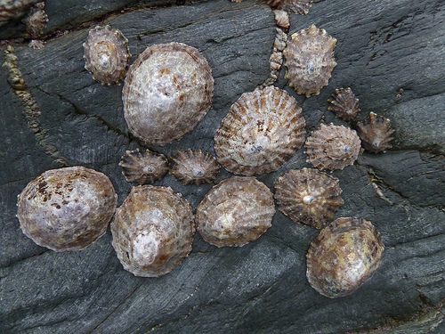

<div class="container lifeandliving"><div id="contents" class="col-md-12 main-content"><span  class="ch-nr-2"/>
        <div  class="section"><h1 class="title" id="toc-id-0">Biodiversiteit</h1><div class="teachers-guide">
<p><strong>Hoofstuk oorsig</strong></p>

<p>3.5 weke</p>

<p>Nadat ons gekyk het na die biosfeer en waar lewe op Aarde bestaan, gaan ons nou die biodiversiteit van lewe op aarde bestudeer. Hierdie hoofstuk begin deur te kyk na die klassifikasiesisteem en hoe wetenskaplikes alle lewende organismes klassifiseer. Die hi&#235;rargiese klassifikasiesisteem verskaf net 'n oorsig en dit sal weer in Gr.10 behandel word wanneer leerders Lewenswetenskappe as vak neem. Nadat ons na die vyf koninkryke gekyk het, kyk ons na die biodiversiteit van plante en diere. Volgens KABV sou leerders reeds van die verskeidenheid plante en diere in Gr. 5 geleer het en hulle sou ook al die term biodiversiteit gehoor het. Hierop word voortgebou en uitgebrei soos wat ons die ander plante en diere van die klassifikasiesisteem bestudeer. Die ander drie koninkryke, naamlik Protista, Fungi en Bakterie&#235; word nie in detail bespreek nie, maar in Gr. 9 sal leerders wel na 'n paar voorbeelde kyk wanneer hulle mikro&#246;rganismes in meer detail bespreek.</p>

<p/>

<p>2.1 Klassifikasie van lewende dinge (3 ure)</p>
<table><tr><td><p><strong>Opdragte</strong></p></td><td><p><strong>Vaardighede</strong></p></td><td><p/></td></tr><tr><td><p>Aktiwiteit: Groepeer 'n paar alledaagse voorwerpe</p></td><td><p>Waarneming, klassifisering, groepwerk, beskrywing, bespreking, aanteken, skryf</p></td><td><p>KABV aanbeveling</p></td></tr><tr><td><p>Aktiwiteit: Aristoteles se klassifikasiesisteem</p></td><td><p>Waarneming, klassifisering, teken, verduidelik</p></td><td><p>Opsioneel (Uitbreiding)</p></td></tr><tr><td><p>Aktiwiteit: Vergelyk plante en diere</p></td><td><p>Waarneming, identifisering, vergelyking, bespreking</p></td><td><p>KABV aanbeveling</p></td></tr></table><p/>

<p>2.2 Verskeidenheid van diere (4.5 ure)</p>
<table><tr><td><p><strong>Opdragte</strong></p></td><td><p><strong>Vaardighede</strong></p></td><td><p/></td></tr><tr><td><p>Aktiwiteit: Klassifiseer gewerweldes en ongewerweldes</p></td><td><p>Identifiseer, klassifiseer</p></td><td><p>KABV aanbeveling</p></td></tr><tr><td><p>Aktiwiteit: Identifiseer die vyf klasse van Vertebrata (gewerwelde diere)</p></td><td><p>Identifiseer, klassifiseer, onthou</p></td><td><p>KABV aanbeveling</p></td></tr><tr><td><p>Akiwiteit: Identifiseer die kenmerkende eienskappe van visse</p></td><td><p>Waarneming, identifisering, lys</p></td><td><p>Opsioneel (Aanbeveel)</p></td></tr><tr><td><p>Aktiwiteit: Beskryf Amfibie&#235;</p></td><td><p>Waarneming, identifisering, verduideliking, hipotesestelling</p></td><td><p>Opsioneel (Uitbreiding)</p></td></tr><tr><td><p>Aktiwiteit: Reflekteer oor reptiele</p></td><td><p>Teken, benoeming, identifisering, klassifisering</p></td><td><p>Opsioneel (Uitbreiding)</p></td></tr><tr><td><p>Aktiwiteit: Identifiseer eienskappe van vo&#235;ls</p></td><td><p>Groepwerk, verduidelik, identifisering, uitken van kenmerke, vergelyking</p></td><td><p>Opsioneel (Uitbreiding)</p></td></tr><tr><td><p>Aktiwiteit: Identifiseer eienskappe van soogdiere</p></td><td><p>Groepwerk, dinkskrum, onthou, lyste maak</p></td><td><p>Opsioneel (Uitbreiding)</p></td></tr><tr><td><p>Aktiwiteit: Vergelyk Vertebrata</p></td><td><p>Vergelyking</p></td><td><p>Opsioneel (Aanbeveel)</p></td></tr><tr><td><p>Aktiwiteit: Klassifisering van Arthropoda</p></td><td><p>Waarneming, beskrywing, klassifisering</p></td><td><p>Opsioneel (Uitbreiding)</p></td></tr><tr><td><p>Aktiwiteit: Waarneming van Mollusca</p></td><td><p>Waarneming, identifisering, beskrywing, teken, benoeming</p></td><td><p>KABV aanbeveling</p></td></tr></table><p/>

<p>2.3 Verskeidenheid van plante (3 ure)</p>
<table><tr><td><p><strong>Opdragte</strong></p></td><td><p><strong>Vaardighede</strong></p></td><td><p/></td></tr><tr><td><p>Aktiwiteit: Indringerplante in Suid-Afrika</p></td><td><p>Waarneming, navorsing, beskrywing</p></td><td><p>Opsioneel (Uitbreiding)</p></td></tr><tr><td><p>Aktiwiteit: Ontdek die veskille tussen monokotiele en dikotiele</p></td><td><p>Waarneming, beskrywing, opsomming</p></td><td><p>KABV aanbeveling</p></td></tr></table><p/>
</div>
<p/>
<div class="note col-md-10" data-type="keyquestions"><ul data-class="ListBulleted"><li>Hoe groepeer en klassifiseer ons lewende organismes in die w&#234;reld?</li>
<li>Hoekom moet ons lewende dinge klassifiseer?</li>
<li>Hoe klassifiseer ons al die diere op aarde?</li>
<li>Wat is die verskil tussen reptiele en amfibie&#235;?</li>
<li>Is insekte en Arachnida (spinnekoppe) verskillend?</li>
<li>Is daar 'n manier om plante te klassifiseer?</li>
<li>Watter verskeidenheid plante en diere kom in Suid-Afrika voor?</li>
</ul></div>
<p/>
<div class="teachers-guide">
<p>Indien moontlik, maak 'n uitstalling van natuurtydskrifte, boeke en ander leesmateriaal in die klaskamer wanneer u hierdie hoofstuk bespreek. U kan foto's of prente van verskillende plante, diere, fungi en bakerie&#235; uit tydskrifte versamel. 'n Voorstel is om dit met plastiek oor te trek sodat u dit weer kan gebruik.</p>
</div>
<p/>

<p>Oor miljoene jare het elke spesie wat vandag leef, verander en aangepas om in 'n spesifieke omgewing te lewe, om die voorbestaan van die spesie te verseker. Biodiversiteit is 'n term wat gebruik word om die groot verskeidenheid van lewende organismes wat op Aarde leef in 'n verskeidenheid habitatte, te beskryf.</p>

<p/>

<p>Daar is net so baie tipes organismes. Hoe kan ons sin maak van al die organismes op Aarde? Ons het 'n manier nodig om hulle te groepeer. Dit word klassifisering genoem. Kom ons vind uit hoe dit gedoen word!</p>
<div class="section"><h2 class="title" id="toc-id-1">Klassifikasie van lewende dinge</h2><div class="note col-md-6" data-type="newwords"><ul data-class="ListBulleted"><li>eienskap</li>
<li>klas</li>
<li>klassifiseer</li>
<li>koninkryk</li>
<li>orde</li>
<li>filums</li>
</ul></div>
<p/>

<p>Mense is al vir duisende jare gedurig besig om dinge te groepeer, om sin te maak van die w&#234;reld om ons.</p>

<p/>
<div class="activity" data-type="Activity"><h1 class="title">Groepeer 'n paar alledaagse voorwerpe</h1><div class="teachers-guide">
<p>In hierdie aktiwiteit gaan leeders die geleentheid kry om alledaagse voorwerpe te groepeer na aanleiding van waarneembare kenmerke. Dit l&#234; die fondasie vir die klassifisering en groepering wat in hierdie hoofstuk gedoen gaan word. Onderwysers moet so veel as moontlik skoendose of roomysbakke (winkelsakke kan ook werk) bymekaarmaak vir elke groep in die klas. Leerders moet vir huiswerk die vorige dag elkeen vyf voorwerpe van die huis af bring. Hierdie voorwerpe moet klein genoeg wees om in die skoenboks / roomysbak te pas. Hulle moet items kies wat hulle elke dag gebruik. Maak net seker dat hulle nie waardevolle items bring nie!</p>
</div>
<p/>

<p><strong>MATERIALE</strong></p>
<ul data-class="ListBulleted"><li>voorwerpe van die huis af</li>
<li>skoendose / roomysbakke</li>
</ul><p/>
<div class="note col-md-6" data-type="takenote">
<p>Wanneer jy waarneming doen, gebruik jy jou sintuie om jou meer oor iets te vertel. Hoe voel dit of lyk dit? Het dit 'n spesifieke smaak of reuk? Maak dit 'n spesifieke geluid?</p>
</div>
<p/>

<p><strong>INSTRUKSIES:</strong></p>
<ol data-class="ListEnumerated"><li>Werk in groepe van vier.</li>
<li>Elke lid van die groep moet vyf items van die huis af bring. Kies voorwerpe wat maklik is om rond te dra en wat maklik in 'n skoendoos sal pas.</li>
<li>Kyk versigtig na elk van die items wat elkeen van die huis af gebring het.</li>
<li>Gebruik die skoendose om die items te groepeer na aanleiding van jou waarnemings.</li>
<li>Maak 'n uitstalling voor in die klas van al die voorwerpe wat almal in die klas gebring het.</li>
<li>
<p>Bespreek die verskillende groeperingsmetodes wat elke groep in die klas gebruik het. Kry nou 'n standaardgroeperingsmetode wat gebruik kan word om AL die voorwerpe  wat almal gebring het te <strong>klassifiseer</strong>.</p>
</li>
</ol><div class="teachers-guide">
<p>Moedig leerders gedurende hierdie aktiwiteit aan om te kyk na waarneembare eienskappe om hulle te klassifiseer, bv. vorm, kleur, grootte, tekstuur, gebruik, ens.</p>
</div>
<p/>

<p><strong>VRAE:</strong></p>
<div class="exercises"><div class="problemset"><div class="entry"><div class="problem">Trek 'n tabel in die spasie hieronder, en teken al die items vir elke groep in jou klas, aan. 
<p/>

<p><br/><br/><br/><br/><br/><br/><br/><br/></p>
</div><div class="solution">
<p/><p>Leerder-afhanklike antwoord.</p>
</div></div><div class="entry"><div class="problem">Hoe het jou klein groepie jou items aan die begin geklassifieer? Watter eienskappe het jy gebruik om jou items te klassifiseer? 
<p/>

<p/><hr/><hr/><hr/><hr/></div><div class="solution">
<p/><p>Leerder-afhanklike antwoord.</p>
</div></div><div class="entry"><div class="problem">
<p>Skryf drie of vier sinne oor die standaardklassifikasie-metode wat julle besluit het om in die klas te gebruik. Watter <strong>eienskappe</strong> van die items het jy gebruik om dit te klassifiseer en te groepeer? Was dit anders as in jou klein groepie?</p>

<p/><hr/><hr/><hr/><hr/></div><div class="solution">
<p/><p>Leerder-afhanklike antwoord.</p>
</div></div></div></div>

<p/>
</div>
<figure><figcaption class="caption">Plato en Aristoteles in die broemde sklidery deur Raphael, genoem "Skool van Athene".</figcaption></figure><p/>

<p>Aristoteles was 'n Griekse filosoof en denker wat omtrent 2400 jaar gelede geleef het. Hy het die volgende groeperingsisteem ontwerp, wat gebruik is tot omtrent 2000 jaar na sy dood!</p>
<ul data-class="ListBulleted"><li>Hy het alle organismes verdeel in plante en diere.</li>
<li>Toe verdeel hy alle diere in di&#233; "met bloed" en di&#233; "sonder bloed".</li>
<li>Laastens is diere verdeel in drie groepe gebaseer om hulle manier van beweging: stappers, vlie&#235;rs of swemmers.</li>
</ul><p/>
<div class="activity" data-type="Activity"><h1 class="title">Aristoteles se klassifikasiesisteem</h1><div class="teachers-guide">
<p>Hierdie is 'n <strong>opsionele aktiwiteit</strong> vir blootstelling aan verskillende tipes van klassifikasie.<strong> </strong></p>
</div>
<p/>

<p><strong>INSTRUKSIES:</strong></p>
<ol data-class="ListEnumerated"><li>Kyk na die volgende foto's van verskillende tipes diere.</li>
<li>Gebruik Aristoteles se metode van klassifikasie om die diere te groepeer gebaseer op die manier waarop hulle beweeg. </li>
<li>Teken 'n tabel van jou groeperings in die spasie na die foto's. Gee vir jou tabel 'n opskrif.</li>
</ol><figure><figcaption class="caption">'n Pikkewyn</figcaption></figure><figure><figcaption class="caption">'n Skoenlapper</figcaption></figure><figure><figcaption class="caption">'n Kat</figcaption></figure><figure><figcaption class="caption">'n Olifant</figcaption></figure><figure><figcaption class="caption">'n Krokodil</figcaption></figure><figure><figcaption class="caption">'n Arend</figcaption></figure><figure><figcaption class="caption">'n Mens</figcaption></figure><p/>

<p/>
<figure><figcaption class="caption">Dolfyne</figcaption></figure><figure><figcaption class="caption">Vlermuise</figcaption></figure><p><br/><br/><br/><br/><br/><br/><br/></p>
<div class="teachers-guide">
<p>Leerder-afhanklike antwooord. Die tabel behoort soos volg te lyk: (Daar mag variasies wees, afhangende van of leerders besluit om 'n dier in meer as een groep te sit, of om dit te klassifiseer na aanleiding van sy manier van beweging).</p>

<p><u>Klassifikasie van 'n groep diere volgens Aristoteles se metode</u></p>
<table><tr><td><p><strong>Stappers</strong></p></td><td><p><strong>Vlie&#235;rs</strong></p></td><td><p><strong>Swemmers</strong></p></td></tr><tr><td><p>Pikkewyn</p>

                  
<p>Olifant</p>

                  
<p>Kat</p>

                  
<p>Krokodil</p>

                  
<p>Mens</p></td><td><p>Arend</p>

                  
<p>Skoenlapper</p>

                  
<p>Vlermuise</p></td><td><p>Pikkewyn</p>

                  
<p>Dolfyne</p>

                  
<p>Krokodil</p>

                  
<p>Mens</p></td></tr></table><p/>
</div>
<p><strong>VRAE:</strong></p>
<div class="exercises"><div class="problemset"><div class="entry"><div class="problem">Was daar diere wat moeilik was om te klassifiseer? Watter diere was moeilik om te klassifiseer? 
<p/>

<p/><hr/><hr/><hr/></div><div class="solution">
<p/><p>Diere wat moeilik is om te klassifiseer is di&#233; wat in meer as een groep kan wees, soos die pikkewyn, krokodil en die mens.</p>
</div></div><div class="entry"><div class="problem">Dink jy dat Aristoteles se metode van klassifikasie tekortkomings het? Verduidelik die probleme wat jy mag ondervind as jy hierdie metode gebruik. 
<p/>

<p/><hr/><hr/></div><div class="solution">
<p/><p>Moontlike antwoorde mag die volgende wees: Sommige diere val in meer as een groep (pikkewyn, krokodil, ens.) omdat dit meer fokus op wat diere doen as die verskille tussen hoe hulle lyk.</p>
</div></div></div></div>

<p/>
</div>

<p/>

<p>Soos meer en meer diere, plante en mikro&#246;rganismes ontdek is, het wetenskaplikes  Aristoteles se metode van klassifikasie begin bevraagteken. Dit het nie so goed gewerk as wat almal gedink het dit sou nie. Hoekom, dink jy, is dit belangrik om te evalueer <em>hoe</em> ons dinge klassifiseer?</p>
<div class="teachers-guide">
<p>Hou 'n klasbespreking hieroor. Verwys daarna as 'n proses wat gedurig probeer om die klassifikasie te verbeter en dat dit ni&#233; 'n "gegewe" of statiese metode is nie. Dit moet kan verander soos wat ons kennis en begrip van die w&#234;reld en die organismes daarin ontwikkel. Alle nuwe ontdekkings moet in ag geneem word.</p>
</div><figure><figcaption class="caption">Carl Linnaeus</figcaption></figure><p/>

<p>In the 1700s het Carl Linnaeus die klassifikasiesisteem ontwikkel, wat organismes klassifiseer op grond van hulle ooreenkomste, funksies en ook verwantskappe met ander organismes.</p>

<p/>

<p>Vandag kan ons met die gebruik van moderne mikroskope en ons kennis van genetika, organismes baie akkuraat klassifiseer. Op hierdie manier kan ons organismes klassifiseer op grond van die eienskappe wat hulle in gemeen het.</p>

<p/>
<div class="note col-md-6" data-type="didyouknow">
<p>Wetenskaplikes skat dat daar omtrent 30 miljoen spesies van organismes op Aarde is! Wanneer hulle klassifiseringsisteme gebruik om hierdie organismes te klasifiseer, sien hulle patrone in die natuur en kan hulle ook die verwantskappe tussen organismes sien.</p>
</div><div class="section"><h3 class="title" id="toc-id-2">Ons klassifikasiesisteem</h3>
<p>Alle lewende organismes word verdeel in vyf <strong>koninkryke</strong>:</p>
<ol data-class="ListEnumerated"><li>
<p><strong>Diere</strong></p>
</li>
<li>
<p><strong>Plante</strong></p>
</li>
<li>
<p><strong>Fungi</strong></p>
</li>
<li>
<p><strong>Protista (Protiste)</strong></p>
</li>
<li>
<p><strong>Bakterie&#235;</strong></p>
</li>
</ol><p/>
<figure id="gd-idp4154720"></figure><p/>

<p>Wat is ons as mense? Aan watter koninkryk behoort ons? </p><hr/><div class="teachers-guide">
<p>Omdat ons weet dat ons nie fungi, plante, protiste of bakterie&#235; is nie (nogal bietjie groter!) behoort ons aan die diereryk.</p>
</div>
<p/>
<div class="note col-md-6" data-type="takenote">
<p>Daar word dikwels na die koninkryk Bakterie&#235; verwys as <strong>Monera</strong>.</p>
</div>
<p/>

<p>Dink terug aan die voorbeeld van hoe ons leerders in die skool klassifiseer. As ons die skool vergelyk met die manier waarop ons organismes klassifiseer, kan ons s&#234; dat die skool drie koninkryke het. Ons moet egter leerders nog verder opdeel. Die laerskool is in sewe grade verdeel (Gr. 1-7) en die ho&#235;rskool is in vyf grade (Gr. 8-12). Die klassifikasiesisteem vir organismes moet ook verder onderverdeel word omdat elke koninkryk duisende verskillende soorte organismes het.</p>

<p/>

<p>Elke koninkryk is verdeel in kleiner groepe, wat elk 'n <strong>filums</strong> genoem word. Organismes met soortgelyke eienskappe is in dieselfe filum. In elke filum , is daar kleiner verdelings wat <strong>klasse</strong> genoem word en elke klas word verder verdeel in <strong>ordes</strong>, <strong>families</strong>, <strong>genera</strong> en dan <strong>spesies</strong>.</p>

<p/>
<div class="note col-md-6" data-type="takenote">
<p>Wees versigtig om hierdie woorde korrek te gebruik: een <em>filum</em>, baie <em>filums</em>. Ook een <em>genus</em>, baie <em>genera.</em></p>
</div>
<p/>

<p>Dink weer aan jou skool. Daar is baie leerders in die laerskool. As jy die hele skool in grade verdeel, is daar minder leerders in elke graad. Julle het ook miskien verskillende klasse en elke klas het minder leerders in. Wanneer ons organismes klassifiseer, gebeur dieselfde. 'n Koninkryk is 'n baie groot groep, terwyl 'n spesie 'n baie kleiner groep is.</p>

<p/>

<p>Bestudeer hierdie diagram wat jou sal help om die volgorde te onthou.</p>
<figure id="gd-idp175456"></figure><p/>
<div class="note col-md-6" data-type="takenote">
<p>'n Mnemomiek of "eselsbrug" neem die eerste letter van 'n groep terme om 'n snaakse woord of rympie te maak.</p>
</div>
<p/>
<div class="note col-md-6" data-type="visit">
<p>'n Interaktiewe speletjie vir die klassifikasie van diere<a data-class="ExternalLink" href="http://bit.ly/1euTmGq">bit.ly/1euTmGq</a></p>
</div>
<p/>

<p>Ons moet ook kan onderskei tussen organismes. Hoe gee ons name aan organismes?</p>

<p/>
<div class="note col-md-6" data-type="takenote">
<p>Binomiaal kom van die latyn <em>bi</em>- twee en <em>nomius</em>- name. Nomenklatuur kom van die Latynse woorde <em>nomen</em> - naam en <em>calare-</em> om te noem. Binomiale nomenklatuur beteken dus om iets op twee name te noem.</p>
</div>
<p/>

<p>Carl Linnaeus het 'n spesiale naamgewingsisteem ontwikkel wat <strong>binomiale nomenklatuur</strong> genoem word, om alle organismes name te gee. Alle organismes het dus <strong>twee</strong> (bi- beteken twee) woorde in sy naam.</p>
<ul data-class="ListBulleted"><li>Die eerste deel van die naam verwys na die genus waaraan die organisme behoort. Dit word altyd met 'n hoofletter geskryf.</li>
<li>Die tweede deel van die naam verwys na die spesie in die genus. Dit word altyd met 'n kleinletter geskryf.</li>
<li>
<p>As jy tik, moet jy beide hierdie name <em>kursief ("in italics")</em> tik, maar as jy dit met die hand skryf moet jy albei onderstreep. Dit wys dat jy die organisme identifiseer op sy wetenskaplike genus- en spesie-naam.</p>
</li>
</ul><p/>

<p>Die wetenskaplike naam vir die Afrika-olifant is byvoorbeeld <em>Loxodonta africana</em>. Mense behoort aan die genus <em>Homo</em> en aan die spesie <em>sapiens</em> so ons is <em>Homo sapiens</em>.</p>

<p/>
<div class="note col-md-6" data-type="takenote">
<p>Die "wetenskaplike naam", die Latynse naam" en die "binomiale nomenklatuur" is verskillende maniere om dieselfde te s&#234;. Dit verwys alles na <em>dieselfde</em> sisteem van naamgewing deur enus en spesiename in Latyn.</p>
</div>
<p/>
<div class="note col-md-6" data-type="visit">
<p>Gaan loer 'n bietjie na 'n paar snaakse name vir organismes<a data-class="ExternalLink" href="http://bit.ly/15QNUhN">bit.ly/15QNUhN</a></p>
</div>
<p/>

<p>Noudat ons gesien het hoe om organismes te klassifiseer, kom ons gaan kyk 'n bietjie nader na die verskille tussen die koninkryke.</p></div><div class="section"><h3 class="title" id="toc-id-3">Plante en diere</h3><div class="note col-md-6" data-type="visit">
<p>Die "filospeletjie" ('n kaartspeletjie wat in die klas gespeel kan word)<a data-class="ExternalLink" href="http://bit.ly/14o3yPp">bit.ly/14o3yPp</a></p>
</div>
<p/>
<div class="activity" data-type="Activity"><h1 class="title">Vergelyking van plante met diere</h1>
<p><strong>INSTRUKSIES:</strong></p>
<ol data-class="ListEnumerated"><li>Bestudeer die diagram wat die vyf koninkryke toon wat gewoonlik gebruik word om organismes te klassifiseer. Kyk mooi na die plante en diere.</li>
<li>Beantwoord die volgende vrae:</li>
</ol><p/>
<div class="note col-md-6" data-type="takenote">
<p>Wanneer ons plante en diere met mekaar vergelyk kan ons hulle dikwels vergelyk op grond van hulle beweging, wat hulle eet en hoe hulle die voedsel verkry, en hoe hulle voortplant.</p>
</div>
<p><strong>VRAE:</strong></p>
<div class="exercises"><div class="problemset"><div class="entry"><div class="problem">Bestudeer die organismes in die diere se koninkryk. Watter eienskappe het alle diere in gemeen? 
<p/>

<p/><hr/><hr/><hr/></div><div class="solution">
<p/><p>Leerder-afhanklike antwoorde: Dit kan die volgende insluit: al hierdie diere kan beweeg op verskillende maniere of almal het 'n spesiale liggaamsbedekking. Hierdie diere moet almal eet; &#243;f plante &#243;f ander diere.</p>
</div></div><div class="entry"><div class="problem">Bestudeer die organismes in die plante se koninkryk. Watter eienskappe het alle plante in gemeen? 
<p/>

<p/><hr/><hr/><hr/></div><div class="solution">
<p/><p>Leerder-afhanklike antwoorde. Dit kan die volgende insluit: Plante kan nie beweeg nie, maar is vasgeanker op een plek. Plante het nie nodig om te eet nie, omdat hulle hul eie voedsel deur fotosintese produseer. Plante absorbeer water. Plante respireer net soos diere maar hulle neem ook koolstofdioksied in vir fotosintese en gee suurstof af as 'n neweproduk. Plante se voortplanting verskil van diere s'n deurdat baie plante sade vorm en ander plante, (soos varings) ander strukture vorm.</p>
</div></div><div class="entry"><div class="problem">
<p>Teken 'n tabel om die verskille tussen die eienskappe van plant en diere te toon. Bespreek die vergelyking tussen plante en diere in jou groep en dan met die klas.</p>

	      
<p><br/><br/><br/><br/><br/><br/><br/><br/><br/><br/></p>
</div><div class="solution">
<p/><p>Leerders moet die waarneembare verskille op die diagram / illustrasie met mekaar vergelyk. Sommige van hierdie verskile kan die volgende wees:</p>

          <table><tr><td><p><strong>Plante</strong></p></td><td><p><strong>Diere</strong></p></td></tr><tr><td><p>Plante is gewoonlik op een plek geanker en beweeg deur te groei en om hulle blare of kroonblare in die rigting van die son of water te draai.</p></td><td><p>Diere kan self rondbeweeg om kos, maats of skuiling te vind of om weg te beweeg van gevaar.</p></td></tr><tr><td><p>Plante met chlorofil kan hulle eie glukose (voedsel) vervaardig van sonlig, water en koolstofdioksied.</p></td><td><p>Diere kan nie hulle eie voedsel vervaardig nie en moet plante of ander diere eet vir voeding.</p></td></tr><tr><td><p>Plante produseer suurstof en neem koolstofdioksied in.</p></td><td><p>Diere neem suurstof in en gee koolstofdioksied af.</p></td></tr><tr><td><p>Plante het 'n beperkte vermo&#235; om sintuiglike waarnemings te maak.</p></td><td><p>Diere het 'n goed-ontwikkelde vermo&#235; om sintuiglike waarnemings te maak.</p></td></tr><tr><td><p>ens.</p></td><td><p>ens.</p></td></tr></table><p/>
</div></div></div></div>

<p/>
</div>

<p/>
<div class="note col-md-6" data-type="visit">
<p>Leer meer oor die koninkryk Animalia (diereryk)<a data-class="ExternalLink" href="http://bit.ly/18djDrj">bit.ly/18djDrj</a></p>
</div></div><div class="section"><h3 class="title" id="toc-id-4">Fungi</h3>
<p>Die meeste mense sal nie brood eet wat broodskimmel (muf) op het nie maar sal wel 'n bord vol gebraaide sampioene, truffels en morieljes eet! Hierdie, asook gis, is voorbeelde van fungi.</p>

<p/>
<div class="note col-md-6" data-type="didyouknow">
<p>"Morieljes" is 'n tipe eetbare sampioen. Hulle word uitgeken aan die voorkoms van hulle koppe, wat gaatjies en riwwe het wat dit soos 'n heuningkoek laat lyk.</p>
</div><figure><figcaption class="caption">Morielje<a href="http://commons.wikimedia.org/wiki/File:False_Morel.jpg"> http://commons.wikimedia.org/wiki/File:False_Morel.jpg </a></figcaption></figure><figure><figcaption class="caption">'n Truffel<a href="http://www.flickr.com/photos/scott_darbey/7472656286/"> http://www.flickr.com/photos/scott_darbey/7472656286/ </a></figcaption></figure><figure><figcaption class="caption">Broodskimmel</figcaption></figure><figure><figcaption class="caption">Gis-selle<a href="http://www.flickr.com/photos/tessawatson/384591931/"> http://www.flickr.com/photos/tessawatson/384591931/ </a></figcaption></figure><figure><figcaption class="caption">'n Baie giftige sampioen</figcaption></figure><figure><figcaption class="caption">Knopie-sampioene (soos di&#233; wat ons in die winkel koop)</figcaption></figure><p/>
<div class="note col-md-6" data-type="takenote">
<p>Jy kan baie meer hieroor uitvind deur die skakels in die <strong><u>Besoek</u></strong>-boksies te besoek. Wees nuuskierig en ontdek die moontlikhede!</p>
</div>
<p/>

<p>Fungi speel 'n baie belangrike rol in ons biosfeer omdat hulle dooie organiese materiaal afbreek en die voedingsowwe terugplaas in die grond, sodat plante dit kan gebruik. Sommige fungi kan siektes veroorsaak terwyl ander soos pennisillien ('n antibiotikum) baie nuttig vir ons kan wees. Gis kan weer gebruik word om brood te laat rys en om bier en wyn te fermenteer.</p></div><div class="section"><h3 class="title" id="toc-id-5">Protista en Bakterie&#235;</h3><div class="teachers-guide">
<p>Leerders sal die verskille tussen Protiste en Bakterie&#235; eers beter kan verstaan nadat hulle selle bestudeer het in Gr. 9. Kortliks, Protiste is eukarioties (gewoonlik eensellig, maar nie altyd nie) omdat hulle selle het met 'n membraan om die kern, terwyl Bakterie&#235; prokarioties is omdat hulle DNA-materiaal nie omring is met 'n kernmembraan nie. Bakterie&#235; is altyd eensellig. Protiste het 'n vloeistofmedium nodig, terwyl Bakterie&#235; byna orals kan voorkom.</p>
</div>
<p/>

<p>Ons gaan in meer detail na Protiste en Bakterie&#235; kyk in Gr. 9. Kom ons kyk net na 'n paar basiese eienskappe van hierdie koninkryke.</p>

<p/>

<p>Organismes in hierdie twee koninkryke is mikroskopies, wat beteken dat jy dit nie met die blote oog kan sien nie. Ons kan dit wel sien as ons deur 'n mikroskoop kyk.</p>
<div class="teachers-guide">
<p>Hierdie beelde is ingeluit om leerders 'n idee te gee van hierdie twee koninkryke, anders sal hulle glad nie 'n verwysingspunt h&#234; totdat hulle in Gr. 8 weer by mikro&#246;rganismes uitkom nie. Hierdie beelde is ook baie interessant en wys vir ons wat moontlik is met die mikroskooptegnieke wat vandag beskikbaar is. Dit sluit 'n groot reeks tegnieke in, van skanderings-elektronmikroskopie tot konfokale-, fluoressente- en ligmikroskopie. Die differensiasie van 'n kern m&#233;t 'n membraan in Protista, en 'n membraanlose kern by bakterie&#235; is te gevorderd vir leerders op hierdie stadium as hulle nog nie selle bestudeer het nie. Moedig leerders vir eers aan om na die foto's te kyk, vra hulle wat hulle sien en laat hulle opgewonde word oor die onsigbare w&#234;reld! Leerders hoef glad nie te weet hoe om hierdie mikro&#246;rganismes uit te ken, of wat hulle name is nie.</p>
</div>
<p/>

<p><strong>Verskillende bakterie&#235;</strong></p>
<figure><figcaption class="caption"><em>Escherichia coli</em> bakterie&#235; wat algemeen in die ingewande van diere voorkom</figcaption></figure><figure><figcaption class="caption"><em>Staphylococcus aureus</em> (geel selle) wat dikwels velinfeksies en longontsteking veroorsaak</figcaption></figure><figure><figcaption class="caption"><em>Pseudomonas aeruginosa</em> kom in grond en water voor en veroorsaak infeksies in diere</figcaption></figure><figure><figcaption class="caption"><em>Actinomyces</em> bakterie&#235; wat mondinfeksies veroorsaak</figcaption></figure><p/>

<p><strong>Verskillende Protiste.</strong></p>
<figure><figcaption class="caption">Fitoplankton van die Antarktiese see</figcaption></figure><figure><figcaption class="caption"><em>Asterionella formosa</em> </figcaption></figure><figure><figcaption class="caption"><em>Nitzschia kerguelensis</em><a href="http://commons.wikimedia.org/wiki/File:Nitzschia-kerguelensis_hg.jpg"> http://commons.wikimedia.org/wiki/File:Nitzschia-kerguelensis_hg.jpg </a></figcaption></figure><figure><figcaption class="caption">Verskillende gekleurde Amoebas</figcaption></figure><p/>

<p>Nou gaan ons kyk na die wonderlike verskeidenheid van plante en diere op Aarde, veral in Suid-Afrika</p></div></div><div class="section"><h2 class="title" id="toc-id-6">Verskeidenheid van diere</h2><div class="note col-md-6" data-type="newwords"><ul data-class="ListBulleted"><li>verskeidenheid</li>
<li>ongewerweldes</li>
<li>gewerweldes</li>
</ul></div><div class="teachers-guide">
<p>Gee vir leerders ou tydskrifte en vra hulle om enige diere wat hulle sien uit te knip. (As jy hierdie les vir 'n paar jaar gaan gee is dit die moeite werd om die diere mooi uit te knip en te lamineer sodat jy dit weer en weer kan gebruik!) Sodra hulle 'n hele klomp diere versamel het, vra hulle om die diere in twee groepe te verdeel. Moedig leerders aan om die diere bietjie rond te skuif en te debatteer in watter groep elkeen die beste pas. Aan die einde behoort daar twee groepe diere te wees, heelwaarskynlik vertebrate (gewerweldes) en invertebrate (ongewerweldes) of dalk di&#233; met vere en di&#233; sonder vere of di&#233; met of sonder melkkliere, di&#233; met of sonder vlerke, ens. Soos die leerders die prente rangskik gebruik woorde soos waarneming, vergelyking, kontrastering, evaluering, ens.</p>

<p/>

<p>Sommige leerders mag vra "HOEKOM" ons klassifiseer en hulle behoort aangemoedig te word. Wanneer hulle hieroor vra, verduidelik vir hulle dat dit ons help om uit te vind oor die voorouers van diere en dat ons op hierdie manier die evolusion&#234;re geskiedenis van alle lewende organismes kan navors. Die teenwoorigheid of afwesigheid van 'n spesifieke eienskap kan dus wys dat organismes verwant kan wees aan ander in 'n spesifieke genus, familie of orde, en kan ook dien as riglyn vir ondersoeke na die evolusion&#234;re geskiedenis van hierdie organismes. Baie leerders mag, byvoorbeeld, nie weet dat leeus, renosters en olifante inheems in Afrika is, maar ook verwant is aan diere in ander dele van die w&#234;reld soos Indi&#235;. Deur klassifikasie kan ons bewys dat die Indiese Swartbok en die Koedoe, asook die Eenhoring-renoster van Asi&#235; en die Suid-Afrikaanse swartrenoster verwant is aan mekaar.</p>
</div><div class="section"><h3 class="title" id="toc-id-7">Klassifikasie van diere</h3>
<p>Alle diere in die w&#234;reld vorm deel van die diereryk. Daar is twee duidelik onderskeibare groepe van diere in die diereryk: die <strong>Vertebrata (gewerweldes)</strong> en die <strong>Invertebrata (ongewerweldes)</strong>. Kan jy onthou wat ons gebruik om 'n dier as 'n gewerwelde of 'n ongewerwelde te klassifiseer? Kyk na hierdie voorstellings van x-strale om vir jou 'n idee te gee?  </p><hr/><div class="teachers-guide">
<p>Die teenwoordigheid of afwesigheid van 'n werwelkolom word gebruik om diere as gewerweldes of ongewerweldes te klassifiseer. Die dolfyn, hond en gans is gewerweldes en die sprinkaan en die krap is ongewerweldes.</p>
</div><figure id="gd-idp7268864"></figure><p/>
<div class="note col-md-6" data-type="didyouknow">
<p>Omtrent 98% van alle diere wat reeds ontdek is op aarde is ongewerweldes!</p>
</div>
<p/>

<p>Diere wat 'n werwelkolom (ruggraat) het met 'n holte waarin senuweeselle aangetref word, is vertebrate. Soos ons op die voorstellings van die x-strale van die dolfyn, die hond en die gans kan sien, het hulle skelette en is hulle dus gewerweldes. Hulle skelette is van been. Ons s&#234; dat gewerweldes 'n endoskelet het.</p>

<p/>

<p>Wat van die sprinkaan en die krap? Hoekom kan ons nie hulle bene sien nie? Dit is omdat invertebrate nie 'n skelet van been het nie. Die sprinkaan en die krap het 'n harde dop wat hulle liggame van buite af bedek. Dit beskerm hul sagte liggame aan die binnekant. Ons s&#234; dat hulle 'n eksoskelet het. Nie alle invertebrate het 'n eksoskelet nie.</p>

<p/>

<p>Wat van die jellievis? Dit het  nie 'n werwelkolom nie, so dit is nie 'n gewerwelde nie en moet dus 'n ongewerwelde wees. Het dit 'n harde buitenste dop wat ons 'n eksoskelet noem? Bespreek dit met jou klas. Maak seker dat jy kennis neem van 'n derde tipe van skelet in jou bespreking.  </p><hr/><hr/><div class="teachers-guide">
<p>Ongewerweldes het nie 'n werwelkolom nie, maar dit beteken nie noodwendig dat hulle 'n eksoskelet het nie. Baie ongewerweldes het 'n <strong>hidrostatiese skelet</strong>, soos jellievisse en erdwurms. Sommige ongewerweldes, soos slakke het beide 'n eksoskelet (dop) en 'n endoskelet. Sponse het hulle eie tipe van endoskelet omdat hulle "skelet" gemaak is van kalkagtige steeksels.</p>
</div>
<p/>
<div class="activity" data-type="Activity"><h1 class="title">Klassifisering van gewerweldes en ongewerweldes</h1>
<p><strong>INSTRUKSIES:</strong></p>
<div class="exercises"><div class="problemset"><div class="entry"><div class="problem">
<p>Identifiseer die tipe skelet van elke tipe dier in die tabel en skryf dit onderaan elke prentjie neer.</p>
</div><div class="solution">
<p/>
</div></div><div class="entry"><div class="problem">
<p>Skryf neer of die dier 'n vertebraat of 'n invertebraat is.</p>

		<table class="too-large no-header"><tr><td><p><strong>Dier</strong></p></td><td><figure></figure><p>'n Sprinkaan</p>
<a data-class="ExternalLink" href="http://www.flickr.com/photos/tristrambrelstaff/231188253/"/></td><td><figure></figure><p>'n Bloublasie</p>
<a data-class="ExternalLink" href="http://www.flickr.com/photos/8116305@N04/5395457446/"/></td></tr><tr><td><p><strong>Tipe skelet</strong></p></td><td><p/></td><td><p/></td></tr><tr><td><p><strong>Gewerweldes of ongewerweldes</strong></p></td><td><p/></td><td><p/></td></tr><tr><td><p><strong>Dier</strong></p></td><td><figure></figure><p>Kaapse mossie</p></td><td><figure></figure><p>Skoenlapper</p></td></tr><tr><td><p><strong>Tipe skelet</strong></p></td><td><p/></td><td><p/></td></tr><tr><td><p><strong>Gewerweldes of ongewerweldes</strong></p></td><td><p/></td><td><p/></td></tr><tr><td><p><strong>Dier</strong></p></td><td><figure></figure><p>Skilpad</p>
<a data-class="ExternalLink" href="http://www.flickr.com/photos/50562790@N00/2110796622/"/></td><td><figure></figure><p>Padda</p>
<a data-class="ExternalLink" href="http://www.flickr.com/photos/nuskyn/4145250156/"/></td></tr><tr><td><p><strong>Tipe skelet</strong></p></td><td><p/></td><td><p/></td></tr><tr><td><p><strong>Gewerweldes of ongewerweldes</strong></p></td><td><p/></td><td><p/></td></tr><tr><td><p><strong>Dier</strong></p></td><td><figure></figure><p>Krap</p>
<a data-class="ExternalLink" href="http://www.flickr.com/photos/haemengine/3982256034/"/></td><td><figure></figure><p>Erdwurm</p></td></tr><tr><td><p><strong>Tipe skelet</strong></p></td><td><p/></td><td><p/></td></tr><tr><td><p><strong>Gewerweldes of ongewerweldes</strong></p></td><td><p/></td><td><p/></td></tr></table></div><div class="solution">
<p/><p/>

          <table><tr><td><p><strong>Dier</strong></p></td><td><figure></figure><p>'n Sprinkaan</p>
<a data-class="ExternalLink" href="http://www.flickr.com/photos/tristrambrelstaff/231188253/"/></td><td><figure></figure><p>'n Bloublasie</p></td></tr><tr><td><p><strong>Tipe skelet</strong></p></td><td><p>Eksoskelet</p></td><td><p>Hidrostatiese skelet</p></td></tr><tr><td><p><strong>Gewerweldes of ongewerweldes</strong></p></td><td><p>Ongewerwelde</p></td><td><p>Ongewerwelde</p></td></tr><tr><td><p><strong>Dier</strong></p></td><td><figure></figure><p>Kaapse mossie</p></td><td><figure></figure><p>Skoenlapper</p></td></tr><tr><td><p><strong>Tipe skelet</strong></p></td><td><p>Endoskelet</p></td><td><p>Eksoskelet</p></td></tr><tr><td><p><strong>Gewerweldes of ongewerweldes</strong></p></td><td><p>Gewerwelde</p></td><td><p>Ongewerwelde</p></td></tr><tr><td><p><strong>Dier</strong></p></td><td><figure></figure><p>Skilpad</p></td><td><figure></figure><p>Padda</p></td></tr><tr><td><p><strong>Tipe skelet</strong></p></td><td><p>Endoskelet</p></td><td><p>Endoskelet</p></td></tr><tr><td><p><strong>Gewerweldes of ongewerweldes</strong></p></td><td><p>Gewerwelde</p></td><td><p>Gewerweldes</p></td></tr><tr><td><p><strong>Dier</strong></p></td><td><figure></figure><p>Krap</p></td><td><figure></figure><p><a data-class="ExternalLink" href="http://www.flickr.com/photos/haemengine/3982256034/">Earthworm</a></p></td></tr><tr><td><p><strong>Tipe skelet</strong></p></td><td><p>Eksoskelet</p></td><td><p>Endoskelet</p></td></tr><tr><td><p><strong>Gewerweldes of ongewerweldes</strong></p></td><td><p>Ongewerweldes</p></td><td><p>Ongewerwelde</p></td></tr></table><p/>
</div></div></div></div>

<p/>
</div>
<div class="note col-md-6" data-type="visit">
<p>'n Nuttige grafiek wat die klassifikasiestelsel wys <a data-class="ExternalLink" href="http://bit.ly/178IzyU">bit.ly/178IzyU</a></p>
</div>
<p/>
<div class="note col-md-6" data-type="takenote">
<p>"Filum" is die enkelvoud en "filums" of "filums" is die meervoud</p>
</div>
<p/>

<p>Die  ongewerweldes word in vyf filums verdeel. Die  ongewerweldes is:</p>
<ol data-class="ListEnumerated"><li>Seesponse</li>
<li>Jellievisse</li>
<li>Rondewurms</li>
<li>Weekdiere</li>
<li>Geleedpotiges</li>
</ol><div class="teachers-guide">
<p>Die vyf filums waaruit die ongewerweldes bestaan, het wetenskaplike name, maar dit is nie nodig om dit op hierdie stadium te ken nie. Ons gaan slegs fokus op die geleedpotiges (Arthropoda) en die weekdiere (Mollusca).</p>
</div>
<p/>

<p>Alle gewerweldes behoort almal aan een filum, naamlik die Chordata. Gewerweldes word onderverdeel in vyf klasse.</p>

<p/>
<div class="note col-md-6" data-type="didyouknow">
<p>Ongeveer slegs 2% van alle diere op Aarde het 'n werwelkolom.</p>
</div>
<p/>

<p>Kyk na die volgende diagram wat die verskillende klasse van die gewerweldes en die filums van die ongewerweldes wys. Onthou, die gewerweldes word saamgroepeer as 'n afdeling van net een filum, die Chordata.</p>

<p/>
<figure id="gd-idp11254768"></figure><p/>
<div class="activity" data-type="Activity"><h1 class="title">Identifiseer vyf klasse gewerweldes (Chordata)</h1>
<p/>

<p><strong>INSTRUKSIES:</strong></p>
<ol data-class="ListEnumerated"><li>Bestudeer die vorige illustrasie wat gewerweldes en ongewerweldes aantoon en identifiseer die vyf klasse van die gewerweldes. Skryf dit hieronder neer.</li>
<li>Gebruik die prente wat jy uit tydskrifte versamel het en soek ten minste 5 voorbeelde van elk van hierdie klasse van diere.</li>
</ol><p><strong>VRAE:</strong></p>
<div class="exercises"><div class="problemset"><div class="entry"><div class="problem">
<p>Identifiseer ten minste een onderskeidende kenmerk wat elke klas in gemeen het en wat dit verskillend van ander klasse maak. Skryf dit op die lyntjie langs die klas wat jy hierbo identifiseer het, neer.</p>

<p/><hr/><hr/><hr/><hr/><hr/></div><div class="solution">
<p/><p/>

          <ol data-class="ListEnumerated"><li>Vis - skubbe / kieue / ens.</li>
<li>Amfibie&#235; - sagte, klam vel / longe en vel word gebruik vir asemhaling / vier ledemate met gewebde pote</li>
<li>Reptiele - skubagtige vel / longe vir asemhaling / vier ledemate met tone</li>
<li>Vo&#235;ls - snawel / vere bedek liggaam / lugsakke gebruik vir asemhaling / twee skubagtige bene en twee vlerke</li>
<li>Soogdiere - pels of harige vel / longe / vier ledemate / melkkliere / lewende geboorte</li>
</ol><p/>
</div></div></div></div>

<p/>

<p/>
<div class="teachers-guide">
<p>Omdat so baie diere in Afrika bedreig is as gevolg van verlies aan habitat en onwettige jag, word die diere in hierdie afdeling spesifiek ingesluit om bewustheid aan te wakker en om leerders blootstelling te gee aan die wonderlike diere wat in Suid-Afrika voorkom. Onderwysers word aangemoedig om saam met ander onderwysers van ander vakke, soos tale en kuns, 'n teen-stropingsplakkaat of 'n bewusmakingsveldtog met plakkate aan te pak, om hierdie omgewingskwessies aan te spreek en ander leerders ook daarvan bewus te maak.</p>
</div></div></div><div class="section"><h3 class="title" id="toc-id-8">Gewerweldes (Chordata)</h3><div class="note col-md-6" data-type="newwords"><ul data-class="ListBulleted"><li>Amfibie&#235;r</li>
<li>kraakbeen</li>
<li>ektotermies</li>
<li>endotermies</li>
<li>kieu</li>
<li>larva / larvae</li>
<li>melkklier</li>
</ul></div>
<p/>

<p>Die vyf klasse van die gewerweldes is:</p>
<ol data-class="ListEnumerated"><li>Identifiseer die tipe skelet van elke tipe dier in die tabel en skryf dit onderaan elke prentjie neer.</li>
<li>Amfibie&#235;</li>
<li>Reptiele</li>
<li>Vo&#235;ls</li>
<li>Soogdiere</li>
</ol><div class="section"><h4 class="title">Identifiseer die tipe skelet van elke tipe dier in die tabel en skryf dit onderaan elke prentjie neer.</h4><div class="teachers-guide">
<p>Besoek <a data-class="ExternalLink" href="http://bit.ly/195EX30">bit.ly/195EX30</a> vir 'n webblad vir onderwysers met bronne oor visse.</p>
</div>
<p/>

<p>Visse kom voor in allerhande vorms, groottes en kleure. Daar is 'n baie groot verskeidenheid onder visse. Kyk die tekeninge van verskillende soorte visse.</p>

<p/>
<figure><figcaption class="caption">Skerpioenvis<a href="http://www.flickr.com/photos/biodivlibrary/7064505883/"> http://www.flickr.com/photos/biodivlibrary/7064505883/ </a></figcaption></figure><figure><figcaption class="caption">Swaardvis<a href="http://www.flickr.com/photos/biodivlibrary/7064433129/"> http://www.flickr.com/photos/biodivlibrary/7064433129/ </a></figcaption></figure><figure><figcaption class="caption">Tongvis<a href="http://www.flickr.com/photos/biodivlibrary/6918339104/"> http://www.flickr.com/photos/biodivlibrary/6918339104/ </a></figcaption></figure><figure><figcaption class="caption">Hamerkophaai<a href="http://www.flickr.com/photos/biodivlibrary/6918381652/"> http://www.flickr.com/photos/biodivlibrary/6918381652/ </a></figcaption></figure><figure><figcaption class="caption">Blaasoppie<a href="http://www.flickr.com/photos/biodivlibrary/7064464957/"> http://www.flickr.com/photos/biodivlibrary/7064464957/ </a></figcaption></figure><figure><figcaption class="caption">Goudvis<a href="http://www.flickr.com/photos/biodivlibrary/6918365142/"> http://www.flickr.com/photos/biodivlibrary/6918365142/ </a></figcaption></figure><p/>
<div class="note col-md-6" data-type="visit">
<p>'n Buitengewone, eienaardige diepsee vis (video)<a data-class="ExternalLink" href="http://bit.ly/1460jZG">bit.ly/1460jZG</a></p>
</div>
<p/>
<div class="activity" data-type="Activity"><h1 class="title">Identifiseer kenmerkende eienskappe van visse</h1>
<p/>

<p><strong>VRAE:</strong></p>
<div class="exercises"><div class="problemset"><div class="entry"><div class="problem">Bestudeer die tekeninge van visse versigtig. Alhoewel hulle verskillende vorms, grootes en kleure het, behoort jy die kenmerkende eienskappe van alle visse te kan identifiseer. Noem soveel as moontlik kenmerkende eienskappe van visse. 
<p/>

<p/><hr/><hr/><hr/><hr/></div><div class="solution">
<p/><p>Eienskappe wat leeders moontlik sal insluit: ektotermies, werwelkolom, vinne, kieue, skubbe, leef in water, vaartbelynde liggaam, l&#234; eiers.</p>
</div></div><div class="entry"><div class="problem">Party van die eienskappe wat jy genoem het, mag ook by ander diere gevind word. Kyk weer na jou lys. Maak 'n merkie langs elkeen van die eienskappe op jou lys wat jy slegs by visse kry, of miskien 'n kombinasie van eienskappe wat jy net by visse kry.</div><div class="solution">
<p/><p>Die kombinasie van kieue, vinne en die feit dat visse slegs in water voorkom is die mees kenmerkende eienskappe van visse wat hulle anders maak as ander diere.</p>
</div></div></div></div>

<p/>
</div>

<p>Wanneer ons visse klassifiseer, kyk ons bietjie van naderby na die materiaal waaruit die skelet van die vis gemaak is. Dit lei ons om visse in twee groepe te verdeel:</p>
<ul data-class="ListBulleted"><li>
<p><strong>Kraakbeenvisse</strong> het skelette wat gemaak is van  <strong>kraakbeen</strong>.</p>
</li>
<li>
<p><strong>Beenvisse</strong> het skelette wat van been gemaak is.</p>
</li>
</ul><p/>
<div class="note col-md-6" data-type="didyouknow">
<p>Daar is 'n vis-agtige klas van diere wat die Agnatha genoem word. Die slympaling en lamprei is deel van hierdie groep. Slympalings lyk eintlik meer na 'n wurm as na 'n vis. Daar is nie ooreenstemming oor of 'n slympaling as 'n vis geklassifiseer behoort te word, of nie.</p>
</div>
<p/>
<div class="note col-md-6" data-type="visit">
<p>'n Interessante artikel oor die gebruik van slympalings om klere te maak!<a data-class="ExternalLink" href="http://bit.ly/15QPMHg">bit.ly/15QPMHg</a></p>
</div>
<p/>

<p>Haaie, sandhaaie en pylsterte is deel van die groep kraakbeenvisse, omdat hulle skelette van kraakbeen gemaak is. Hierdie visse haal asem deur sewe pare <strong>kieue</strong>.</p>

<p/>
<div class="note col-md-6" data-type="didyouknow">
<p>Twee-derdes van 'n haai se brein word gebruik om mee te ruik. 'n Haai se reuksintuig is so goed ontwikkel, dat hy selfs weet uit watter rigting 'n reuk vandaan kom.</p>
</div>
<p/>
<figure><figcaption class="caption">Manta pylstert<a href="http://www.flickr.com/photos/zappowbang/5043221443/"> http://www.flickr.com/photos/zappowbang/5043221443/ </a></figcaption></figure><figure><figcaption class="caption">Spikkel-arendsrog<a href="http://commons.wikimedia.org/wiki/File:Spotted_Eagle_Ray_%28Aetobatus_narinari%292.jpg"> http://commons.wikimedia.org/wiki/File:Spotted_Eagle_Ray_%28Aetobatus_narinari%292.jpg </a></figcaption></figure><figure><figcaption class="caption">'n Walvishaai wat deur ander visse omring is<a href="http://www.flickr.com/photos/zappowbang/5043846856/"> http://www.flickr.com/photos/zappowbang/5043846856/ </a></figcaption></figure><figure><figcaption class="caption">'n Witdoodhaai<a href="http://www.flickr.com/photos/hermanusbackpackers/3343254977/"> http://www.flickr.com/photos/hermanusbackpackers/3343254977/ </a></figcaption></figure><p/>
<div class="note col-md-6" data-type="didyouknow">
<p>'n Walvishaai is 'n haai en nie 'n walvis nie. Dit is die w&#234;reld se grootste haai en dit eet slegs plankton.</p>
</div>
<p/>
<div class="note col-md-6" data-type="didyouknow">
<p>Dit was aanvaar dat die selekant ongeveer 65 miljoen jaar gelede uitgesterf het, maar die besonderse vis is in 1938 herontdek toe dit saam met ander visse gevang is. Sedertdien is daar meer van hulle langs die Suid-Afrikaanse kus gevind.</p>
</div>
<p/>

<p>Die beenvisse is die grootste groep vertebrate. Beenvisse het 'n harde skelet wat uit been bestaan.</p>

<p/>

<p><strong>Uitdagende vraag:</strong> Is 'n seeperdjie 'n vis? Soek in boeke en op die internet, om uit te vind, en verduidelik dan waarom 'n seeperdjie as 'n vis beskou kan word, of nie.</p>

<p/><hr/><hr/><figure><figcaption class="caption">'n Seeperdjie<a href="http://www.flickr.com/photos/scobleizer/3458608999/"> http://www.flickr.com/photos/scobleizer/3458608999/ </a></figcaption></figure><div class="teachers-guide">
<p>Ja, 'n seeperdjie is wel 'n vis. Hy haal asem met kieue, het 'n swemblaas om sy dryfvermo&#235; te beheer, en het 'n werwelkolom. Hoewel hy nie 'n stertvin het nie, het hy vier ander vinne wat hom help beweeg. Anders as ander visse, het die seeperdjie nie skubbe nie, maar 'n vel.</p>
</div><div class="note col-md-6" data-type="didyouknow">
<p>Die mannetjie seeperdjie raak swanger! Die wyfie spuit haar eiertjies in die mannetjie se buidelsakkie, waarna hy die eiertjies bevrug en uitbroei, tot hulle gereed is om uit te broei.</p>
</div>
<p/>
<div class="note col-md-6" data-type="visit">
<p>Kyk na hierdie video van 'n mannetjie seeperdjie wat geboorte gee <a data-class="ExternalLink" href="http://bit.ly/15eTuEw">bit.ly/15eTuEw</a></p>
</div></div><div class="section"><h4 class="title">Amfibie&#235;</h4>
<p>Het jy geweet dat die woord amfibie&#235; van twee Griekse woorde , <em>amphi</em> wat albei beteken en <em>bios</em> wat lewe beteken, kom? 'n Amfibie&#235;r is dus 'n dier wat "albei lewens" het. Wat beteken dit?</p>

<p/>

<p>Amfibie&#235; sluit die salamanders, watersalamanders, wurmsalamanders, paddas en brulpaddas in. Kom ons vind uit wat dit beteken dat paddas "albei lewens" het.</p>

<p/>
<div class="note col-md-6" data-type="didyouknow">
<p>Ons praat van 'n<em> swerm</em> vo&#235;ls, 'n<em> kwaak</em> paddas , en 'n groep beeste word 'n<em> kudde</em> genoem!</p>
</div>
<p/>
<div class="activity" data-type="Activity"><h1 class="title">Beskrywing van paddas</h1>
<p/>

<p><strong>INSTRUKSIES:</strong></p>
<ol data-class="ListEnumerated"><li>Bestudeer die foto's van verskillende soorte amfibiese diere in die volgende tabel.</li>
<li>Antwoord die vrae wat volg.</li>
</ol><p/>
<table class="too-large"><tr><td><p><strong>Amfibiese dier</strong></p></td><td><p><strong>Larwe (kleintjie)</strong></p></td><td><p><strong>Volwassene</strong></p></td></tr><tr><td><p>Padda</p></td><td><figure></figure></td><td><figure></figure></td></tr><tr><td><p>Brulpadda</p></td><td><figure></figure></td><td><figure></figure></td></tr><tr><td><p>Salamander</p></td><td><figure></figure></td><td><figure></figure></td></tr><tr><td><p>Watersalamander</p></td><td><figure></figure></td><td><figure></figure></td></tr></table><p/>
<div class="note col-md-6" data-type="didyouknow">
<p>Salamanders kan regenereer (teruggroei). Hulle pote en stert kan binne 'n paar weke teruggroei, indien dit verloor is tydens 'n predator-geval.</p>
</div>
<p/>

<p><strong>VRAE:</strong></p>
<div class="exercises"><div class="problemset"><div class="entry"><div class="problem">Wat kom jy agter omtrent die habitat van jong amfibie&#235; in vergelyking met volwasse amfibie&#235;? 
<p/>

<p/><hr/><hr/></div><div class="solution">
<p/><p>Die jong larwe is &#237;n die water, en die volwassenes is naby die water.</p>
</div></div><div class="entry"><div class="problem">
<p>Wat, dink jy, het die larwes nodig om onder die water gasse te wissel? Wat het die volwasenes nodig om mee asem te haal?</p>

<p/><hr/><hr/></div><div class="solution">
<p/><p>Die larwes het kieue nodig om in die water gaswisseling te laat plaasvind, en die volwassenes het longe nodig om op land mee asem te haal.</p>
</div></div><div class="entry"><div class="problem">Kan jy nou verduidelik waarom amfibie&#235; se naam kom van die twee Griekse woorde wat "dubblele lewe" of "albei lewens" beteken? Skryf jou verduideliking hieronder neer. 
<p/>

<p/><hr/><hr/></div><div class="solution">
<p/><p>Amfibie&#235; het twee stadiums in hulle lewensiklus. Eerstens die larwestadium wat in water voorkom, en dan die volwasse stadium wat op land lewe (en ook in die water).</p>
</div></div><div class="entry"><div class="problem">
<p>Amfibie&#235; is <strong>ektotermies</strong>. Verduidelik hoe 'n amfibie&#235;r sy liggaam warm hou.</p>

<p/><hr/><hr/></div><div class="solution">
<p/><p>Hulle kry hulle hitte uit hulle omgewing, en moet daarom in omgewings bly waar dit warm genoeg is om genoeg hitte te kan kry om te oorleef. As dit baie koud word, moet 'n Amfibie&#235;r 'n warm plekkie vind onder 'n stomp of blare of iewers in die son.</p>
</div></div><div class="entry"><div class="problem">Die meeste Amfibie&#235; het 'n slymerige, klam vel. Bespreek redes waarom hulle hierdie tipe vel nodig het. 
<p/>

<p/><hr/><hr/></div><div class="solution">
<p/><p>Leerders moet met 'n geloofwaardige verduideliking of hipotese vorendag kom.  Die korrekte verduideliking is dat die vel hierdie slymerige vloeistof afskei om die vel klam te hou, omdat hulle hulle vel saam met hule longe en mond gebruik vir gaswisseling.</p>
</div></div><div class="entry"><div class="problem">
<p>Kyk na die volgende foto van 'n wurmsalamander. Daar is 'n debat in die Gr. 6-klas. Party leerders dink dat dit 'n wurm is, wat beteken dat dit dus 'n invertebraat is. Ander dink weer dat dit 'n slang is, wat beteken dat dit dus 'n vertebraat is. Wat dink jy?</p>

<figure><figcaption class="caption">'n Wurmsalamander<a href="http://commons.wikimedia.org/wiki/File:Adult_Microcaecilia_dermatophaga_in_life_-_journal.pone.0057756.g005-top.png"> http://commons.wikimedia.org/wiki/File:Adult_Microcaecilia_dermatophaga_in_life_-_journal.pone.0057756.g005-top.png </a></figcaption></figure><p>Die wurmsalamander is einlik 'n amfibie&#235;r! Watter eienskappe sal jy gebruik vir jou toets om aan die Gr. 6 leerders te verduidelik dat dit nie 'n wurm is nie. Tweedens, wat het jy nodig om uit te vind, om aan die leerders te verduidelik dat dit nie 'n reptiel (soos 'n slang) is nie, maar 'n  amfibie&#235;r.</p>

<p/><hr/><hr/><hr/><hr/></div><div class="solution">
<p/><p>Vir 'n dier om ni&#233; 'n ongewerwelde, soos 'n wurm, te wees nie, moet dit 'n werwelkolom h&#234;. Die wurmsalamander het wel 'n werwelkolom en 'n skedel. Die wurmsalamander is ni&#233; 'n slang nie (dit is nie 'n reptiel nie) en dit het 'n larwestadium wat in die water uigebroei word en ondergaan metamorfose om 'n volwassene te word. Die larwes het ook kieue waarmee hulle onder water gasse kan wissel. Wurmsalamanders het ook nie skubbe soos reptiele nie.</p>
</div></div><div class="entry"><div class="problem">
<p>Amfibie&#235;rs l&#234; eiers in water, soos 'n padda. Hoekom, dink jy, moet hulle dit doen? Gee twee redes.</p>

                        <figure><figcaption class="caption">'n Padda wat sopas eiers gel&#234; het.<a href="http://www.flickr.com/photos/anthonymasi/3373720130/sizes/l/"> http://www.flickr.com/photos/anthonymasi/3373720130/sizes/l/ </a></figcaption></figure><p/><hr/><hr/></div><div class="solution">
<p/><p>Sommige moontlike antwoorde is: Die eiers is in die water sodat die larwes reeds in die water is as dit uitbroei, om in die water te kan swem; die eiers sal uitdroog as dit ni&#233; in die water is nie; die bevrugtingsproses in amfibie&#235;rs het dikwels water nodig, omdat die mannetjie sy spermselle in die water uitsproei bo-oor die wyfie se eiers, soos sy dit in die water l&#234;.</p>
</div></div></div></div>

<p/>
<div class="note col-md-6" data-type="didyouknow">
<p>Jy kan die verskil tusse padda-eiers en brulpadda-eiers sien, omdat paddas hulle eiers in hopies, en brulpaddas hulle eiers in stringe  l&#234;. Het jy al ooit padda- of brulpadda-eiers gesien?</p>
</div><div class="note col-md-6" data-type="visit">
<p>Interessante artikel oor wurmsalamanders (caecilians)<a data-class="ExternalLink" href="http://bit.ly/14Ak0yR">bit.ly/14Ak0yR</a></p>
</div></div>

<p/>
<div class="note col-md-6" data-type="visit">
<p>Metamorfose: Amfibie&#235; (dokument&#234;r).<a data-class="ExternalLink" href="http://bit.ly/14rZABn">bit.ly/14rZABn</a></p>
</div></div><div class="section"><h4 class="title">Reptiele</h4>
<p>Reptiele oorleef al op Aarde vir miljoene jare. Die eerste reptiele op aarde het 310 tot 320 miljoen jaar gelede gelewe en het ook die dinosourusse ingesluit.</p>

<p/>
<div class="note col-md-6" data-type="visit">
<p>Leer meer oor 'n fassinerende reptiel wat in Australi&#235; gevind is wat die doringdraak genoem word.<a data-class="ExternalLink" href="http://bit.ly/13QjCGb">bit.ly/13QjCGb</a></p>
</div>
<p/>

<p>Die meeste reptiele leef op land, alhoewel sommige, soos krokodille, varswaterskilpaaie en seeskilpaaie asook party soorte slange en akkedisse groot dele van hulle lewe in water derubring. Reptiele is ektotermies. Hulle kan nie hulle liggaamstemperatuur reguleer nie maar is van die omgewing afhanklik vir warmte.</p>

<p/>
<figure><figcaption class="caption">'n Akkedis wat in die son l&#234; en bak om warm te word.<a href="http://www.flickr.com/photos/eklem/3132577798/"> http://www.flickr.com/photos/eklem/3132577798/ </a></figcaption></figure><p/>

<p>Reptiele is met dro&#235; skubbe bedek. Reptiele plant voort deur hulle eiers op dro&#235; land te l&#234;. Die eiers is bedek met 'n leeragtige of harde dop.</p>

<p/>
<div class="note col-md-6" data-type="visit">
<p>Leer meer oor die luislang, wat haar eiers binne-in haar liggaam hou, totdat dit gereed is om uit te broei.<a data-class="ExternalLink" href="http://bit.ly/1331Bd1">bit.ly/1331Bd1</a></p>
</div>
<p/>
<div class="activity" data-type="Activity"><h1 class="title">Reflekteer oor reptiele</h1>
<p/>

<p><strong>VRAE:</strong></p>
<div class="exercises"><div class="problemset"><div class="entry"><div class="problem">Voltooi hierdie sinne.
<p/>
 <ol data-class="ListEnumerated"><li>Omdat reptiele 'n werwelkolom het, is dit een van die klasse van ______.<hr/></li>
<li>Reptiele is ektotermies, wat beteken dat ______.<hr/><hr/></li>
</ol></div><div class="solution">
<p/><ol data-class="ListEnumerated"><li>Vertebrata of gewerweldes</li>
<li>hulle kan nie hulle liggaamstemperatuur reguleer nie, maar is van die omgewing afhanklik vir warmte</li>
</ol></div></div><div class="entry"><div class="problem">
<p>Maak 'n biologiese tekening, met byskrifte en 'n opskrif, van die akkedis wat l&#234; en bak in die son in die vorige foto.</p>

<p><br/><br/><br/><br/><br/><br/><br/><br/></p>
</div><div class="solution">
<p/><p>Leerder-afhanklike antwoord</p>

<figure id="gd-idp17093536"></figure></div></div><div class="entry"><div class="problem">
<p>Reptiele kan in vier hoofgroepe verdeel word. Elkeen van die foto's in die tabel hieronder wys 'n voorbeeld van 'n reptiel van elk van hierdie groepe. Probeer om die vier groepe te identifiseer op grond van die vier voorbeelde in die foto's.</p>
     
            <table class="too-large no-header"><tr><td><figure></figure></td><td><figure></figure></td></tr><tr><td><p/></td><td><p/></td></tr><tr><td><figure></figure></td><td><figure></figure></td></tr><tr><td><p/></td><td><p/></td></tr></table><p/>

            </div><div class="solution">
<p/><p/>

            <table><tr><td><figure></figure></td><td><figure></figure></td></tr><tr><td><p>krokodille en alligators</p></td><td><p>akkedisse en geitjies</p></td></tr><tr><td><figure></figure></td><td><figure></figure></td></tr><tr><td><p>slange</p></td><td><p>seeskilpaaie, varswaterskilpaaie en landskilpaaie</p></td></tr></table><p/>
</div></div></div></div>

<p/>
<div class="note col-md-6" data-type="didyouknow">
<p>Seeskilpaaie kom slegs in die see voor, varswaterskilpaaie slegs in varswater, terwyl landskilpaaie nie swem nie, maar op land loop.</p>
</div></div></div><div class="section"><h4 class="title">Vo&#235;ls</h4><div class="teachers-guide">
<p>Indien moontlik, kan u die leerders buitekant toe neem, om te sien of hulle 'n paar vo&#235;ls op die skoolgronde te sien kry voordat die bespreking oor vo&#235;ls gedoen word. Vra leerders om te identifeer wat alle vo&#235;ls in gemeen het. Hulle behoort waar te neem dat alle vo&#235;ls vere het. Dit is die mees kenmerkende eienskap van vo&#235;ls.</p>
</div>
<p/>
<figure><figcaption class="caption">Die bloukraanvo&#235;l is Suid-Afrika se nasionale  vo&#235;l.   <a href="http://www.flickr.com/photos/exfordy/2967158255/"> http://www.flickr.com/photos/exfordy/2967158255/ </a></figcaption></figure><p/>
<div class="activity" data-type="Activity"><h1 class="title">Identifiseer die kenmerkende eienskappe van  vo&#235;ls.</h1>
<p/>

<p><strong>INSTRUKSIES:</strong></p>
<ol data-class="ListEnumerated"><li>Werk in groepe van drie.</li>
<li>Noem die kenmerkende eienskappe van  vo&#235;ls deur die volgende stappe te volg:</li>
<li>Kan jy onthou wat jy oor  vo&#235;ls geleer het in vorige jare? Werk saam met 'n ander groep en hou 'n dinkskrum om die kenmerkende eienskappe van  vo&#235;ls te identifiseer. Bestudeer die foto van die bloukraanvo&#235;l vir 'n paar leidrade.</li>
<li>Gebruik een spesifieke kleur om 'n lys te maak van die eienskappe waaraan jou groep kan dink.</li>
<li>Soos jy meer leer oor die eienskappe van  vo&#235;ls, voeg dit by jou lys in 'n ander kleur, om jou te help om dit te onthou.</li>
</ol><p><br/><br/><br/><br/><br/><br/><br/><br/></p>
<div class="teachers-guide">
<p>Leerder-afhanklike antwoord. U kan groepe vra om hulle eienskappe van  vo&#235;ls met die klas te deel, om seker te maak dat hulle nie verkeerde eienskappe op hulle lys het nie. 'n Tipiese verkeerde eienskap kan wees dat alle  vo&#235;ls kan vlieg. Wys dit uit dat baie  vo&#235;ls, soos volstruise en pikkewyne, nie kan vlieg nie. Herinner hulle daaraan dat Aristoteles hierdie selfde tegniek van klassifisering gebruik het, en dat dit nie gewerk het nie. Daar is natuurlik ook ander diere wat kan vlieg, wat nie  vo&#235;ls is nie, soos vlermuise en vlie&#235;. Leerders behoort waar te neem dat alle vo&#235;ls snawels, vlerke en vere het en dat hulle almal eiers l&#234;.</p>
</div>
<p/>

<p><strong>VRAE:</strong></p>
<div class="exercises"><div class="problemset"><div class="entry"><div class="problem">Vo&#235;ls is een van die vyf klasse van gewerweldes. Skryf 'n sin om te verduidelik wat alle vo&#235;ls in gemeen het. 
<p/>

<p/><hr/></div><div class="solution">
<p/><p>Alle gewerweldes het 'n werwelkanaal waarin daar 'n hol kanaal is met senuweeweefsel binne-in.</p>
</div></div><div class="entry"><div class="problem">
<p>Net soos soogdiere, is vo&#235;ls ook <strong>endotermies</strong>. Wat vertel dit vir ons van hulle liggame?</p>

<p/><hr/><hr/></div><div class="solution">
<p/><p>Dit beteken dat vo&#235;ls hul eie liggaamstemperatuur kan beheer of reguleer. Hulle kan dus warm bly in baie koue omgewings en koel bly in baie warm omgewings.</p>
</div></div><div class="entry"><div class="problem">Watter tipe liggaamsbedekking het alle vo&#235;ls in gemeen? 
<p/>

<p/><hr/><hr/></div><div class="solution">
<p/><p>Leerder-afhanklike antwoord. <strong>L:W</strong> Hoewel meeste leerders sal s&#234; dat alle vo&#235;ls vere het, sal nie baie van hulle kan identifiseer dat vo&#235;ls se bene met skubbe, soos di&#233; van reptiele, bedek is nie. As dit moontlik is, gaan buitentoe om na 'n paar vo&#235;ls te gaan kyk. Kyk of julle hulle bene en pote kan waarneem.</p>
</div></div><div class="entry"><div class="problem">Is dit akkuraat om die stelling te maak dat vo&#235;ls vlerke het en daarom kan vlieg? Verduidelik jou antwoord. Wat sal 'n beter manier wees om hierdie stelling neer te skryf?
<p/>

<p/><hr/><hr/><hr/></div><div class="solution">
<p/><p>Daar word van leerders verwag om 'n stelling te evalueer en 'n verduideliking te gee van hul evaluering. Dit is strengesproke verkeerd om te s&#234; dat vo&#235;ls kan vlieg omdat hulle vlerke het. Nie alle vo&#235;ls se vlerke word gebruik om mee te vlieg nie. Dink, byvoorbeeld, aan die emu, volstuis, pikkewyn, kasuaris, kiwi en die rhea. 'n Beter stelling kan wees: Vo&#235;ls wat kan vlieg, het vlerke waarmee hulle kan vlieg.</p>
</div></div><div class="entry"><div class="problem">
<p>Bestudeer die foto's van die nie-vlie&#235;nde (landgebonde) vo&#235;ls, en vergelyk dit met die vlie&#235;nde vo&#235;ls in die kolom langsaan. Gebruik die foto's om 'n paragraaf te skryf waarin jy die waarneembare verskille tussen die nie-vlie&#235;nde (landgebonde) en die vlie&#235;nde vo&#235;ls verduidelik en ook waarom jy dink dat hierdie eienskappe sommige help om te vlieg en ander nie.</p>

                                    
<table class="too-large"><tr><td><p><strong>Nie-vlie&#235;nde (landgebonde) Vo&#235;ls</strong></p></td><td><p><strong>Vlie&#235;nde vo&#235;ls</strong></p></td></tr>
  
              <tr><td><figure></figure><p>Volstruise </p><p> <a data-class="ExternalLink" href="http://www.flickr.com/photos/jries/6702308713/">http://www.flickr.com/photos/jries/6702308713/</a></p></td>

              <td><figure></figure><p>'n Albatros</p><p><a data-class="ExternalLink" href="http://www.flickr.com/photos/wagnertc/3217889835/">http://www.flickr.com/photos/wagnertc/3217889835/</a></p>
              </td>
              </tr>
              <tr>
<td>

                      <figure></figure><p>Pikkewyne</p></td>
                      
                      <td>
                      
                     <figure></figure><p>'n Suikerbekkie </p><p><a data-class="ExternalLink" href="http://www.flickr.com/photos/berenicedecados/3265420622/">http://www.flickr.com/photos/berenicedecados/3265420622/</a></p></td></tr></table>                     
                      
                      
                      <p/><hr/><hr/><hr/><hr/><hr/><hr/></div><div class="solution">
<p/><p>Die volstruis is 'n groot vo&#235;l met 'n swaar liggaam en lang bene. Die lang bene help hom om vinnig op land te hardloop. Volstruise het vlerke, maar hul vlerke is klein in vergelyking met die groot liggaam.  Die albatros is ook 'n groot vo&#235;l maar dit het 'n baie groot vlerkspan in vergelyking met die res van sy liggaam. 'n Albatros se vere is ook klein en l&#234; styf teen mekaar, om hom te help om te vlieg. Volstruise het baie vere wat groot en los is, maar die vere kan nie genoeg wind skep om die volstruis te laat opstyg nie. Die pikkewyn se liggaamsvorm is beter geskik om te swem as om te vlieg. Pikkewyne het kort, stomp vlerke wat nie sterk genoeg is om hul van die grond af te lig nie, maar die vlerke is nuttig is om mee te swem. Pikkewyne het 'n dik laag vetweefsel wat hulle swaar maak (te swaar om te vlieg) maar dit beskerm hulle teen die koue water. Die suikerbekkie is baie lig en het klein vlerkies wat baie vinnig kan beweeg sodat hy kan vorentoe vlieg en op een plek in die lug kan 
hang. Sy vlerke is ontwerp om baie vinnig te kan heen-en-weer beweeg in die wind omdat dit smal en lig is, terwyl die pikkewyn se dikker, stomp vlerke gevorm is soos 'n roeispaan, wat dit meer geskik vir swem maak.</p>
</div></div></div></div>

<p/>
</div>

<p/>
<div class="note col-md-6" data-type="visit">
<p>Hier is 'n skakel na 'n toepassing (app) vir 'n slimfoon wat jou kan help om vo&#235;ls in Suid-Afrika te identifiseer.<a data-class="ExternalLink" href="http://bit.ly/178KinL">bit.ly/178KinL</a></p>
</div>
<p/></div><div class="section"><h4 class="title">Soogdiere</h4><figure><figcaption class="caption">Leeus is soogdiere</figcaption></figure><figure><figcaption class="caption">'n Vlakvark is 'n soogdier</figcaption></figure><p/>
<div class="activity" data-type="Activity"><h1 class="title">Identifiseer die kenmerkende eienskapppe van soogdiere</h1>
<p/>

<p><strong>INSTRUKSIES:</strong></p>
<ol data-class="ListEnumerated"><li>Werk in groepe van vier.</li>
<li>Jy het miskien al oor soogdiere geleer in vorige jare. Hou 'n dinkskrum in jou groep, om so veel as moontlik kenmerkende eienskappe van soogdiere te kry. Bestudeer die diagram van 'n leeu hierbo vir 'n paar leidrade.</li>
<li>
<p>Maak 'n lys van die eienskappe waaraan julle kan dink in die spasie onderaan, deur een kleur te gebruik.</p>
</li>
<li>
<p>Soos jy meer oor soogdiere leer, kan jy dit byvoeg op jou lys in verskillende kleure. Dit sal dan as 'n opsomming van soogdiere dien, as jy klaar is met hierdie afdeling.</p>

<p><br/><br/><br/><br/><br/><br/><br/><br/></p>
</li>
</ol><div class="teachers-guide">
<p>Leerder-afhanklike antwoorde. <strong>LW</strong> Nadat die leerders hulle lyste gemaak het, kan die groepe gevra word om hulle eienskappe met die klas te deel, om seker te maak dat daar nie foutiewe eienskappe op hulle lyste is nie (alhoewel dit kon dien as 'n basis vir die bespreking oor hoekom  dit ni&#233; kenmerkende eienskappe is nie). Sommige van die kenmerkende eienskappe wat leerders kon identifiseer is: endotermies, vier ledemate, geslagtelike voortplanting, lewende geboorte, hare op liggame.</p>
</div></div>

<p/>

<p>Soogdiere is gewerweldes, wat beteken dat hulle 'n werwelkolom het. Byna alle soogdiere is endotermies. Dit beteken dat hulle in staat is om hulle liggaamstemperature konstant te hou.</p>

<p/>
<div class="note col-md-6" data-type="didyouknow">
<p>Die naakte molrot het sy vermo&#235; om sy liggaamstemperatuur te reguleer, heeltemal verloor. Ander molrotte het 'n beperkte vermo&#235; om hulle liggaamstemperatuur self te reguleer, omdat hulle ondergronds woon, waar die temperatuur gewoonlik baie stabiel is.</p>
</div>
<p/>
<div class="note col-md-6" data-type="takenote">
<p>"Termies" beteken dat dit iets met temperatuur te doen het en "endo" beteken binne-in. Endotermiese diere kan dus hulle eie liggamstemperature van binne-in hulle liggame reguleer.</p>
</div>
<p/>

<p>Soogdiere gee geboorte aan lewende kleintjies en die kleintjies drink melk. Die melk word deur die moeder se <strong>melkkliere</strong> geproduseer (in die spene of borste). Soogdiere het ook hare op hulle liggame. Dit verskil baie tussen verskillende soogdiere. Soogdiere het ook tande, wat verskillend lyk in verskillende dele van die mond.</p>
<figure><figcaption class="caption">Klein katjies wat melk van die ma-kat drink.</figcaption></figure><figure><figcaption class="caption">'n Rob kleintjie wat aan sy ma drink.<a href="http://www.flickr.com/photos/tpholland/6448731161/in/photostream/"> http://www.flickr.com/photos/tpholland/6448731161/in/photostream/ </a></figcaption></figure><p/>

<p>Alle soogdiere haal asem deur hulle longe, en daarom leef die meeste soogdiere op land. Die soogdiere wat in die water leef, soos walvisse en dolfyne, moet na die oppervlak van die water kom om asem te haal.</p>
<figure id="gd-idp17441504"></figure><div class="note col-md-6" data-type="didyouknow">
<p>Walvisse en dolfyne word met 'n lagie hare op hulle vel gebore, wat uitdun soos hulle ouer word en dan verdwyn. Hoekom dink jy verloor hulle hulle hare.</p>
</div>
<p/>
<div class="note col-md-6" data-type="didyouknow">
<p>Terwyl die groter katsoorte (leeus en luiperds) verkies om in die nag te jag, om sodoende oorverhitting te voorkom, jag jagluiperds (cheetahs)in die middel van die dag. Dit gee hulle 'n beter kans om nie hulle prooi aan die groter katte af te staan nie.</p>
</div>
<p/>
<div class="note col-md-6" data-type="visit">
<p>Waarom is daar nie reuse soogdiere nie? (video)<a data-class="ExternalLink" href="http://bit.ly/13gvab1">bit.ly/13gvab1</a></p>
</div>
<p/>

<p>Noudat jy die vyf hoofklasse van die vertebrate bestudeer het, is dit maklik om hulle te vergelyk!</p>

<p/>
<div class="activity" data-type="Activity"><h1 class="title">Vergelyking van gewerweldes</h1>
<p/>

<p><strong>INSTRUKSIES:</strong></p>
<div class="exercises"><div class="problemset"><div class="entry"><div class="problem">
<p>Gebruik die tabel hieronder om die gewerweldes, wat in die foto's gewys word, te vergelyk, op grond van die eienskappe in die eerste kolom.</p>

                  <table class="anomalous"><tr><td><p/></td><td><p><strong>Skilpad</strong></p>

                      <figure></figure></td><td><p><strong>Sjimpansee</strong></p>

                      <figure></figure></td><td><p><strong>Padda</strong></p>

                      <figure></figure></td><td><p><strong>Tarentaal</strong></p>

                      <figure></figure></td><td><p><strong>Goudvis</strong></p>

                      <figure></figure></td></tr><tr><td><p>Klas</p></td><td><p/></td><td><p/></td><td><p/></td><td><p/></td><td><p/></td></tr><tr><td><p>Velbedekking</p></td><td><p/></td><td><p/></td><td><p/></td><td><p/></td><td><p/></td></tr><tr><td><p>Hoe kleintjies gebore word</p></td><td><p/></td><td><p/></td><td><p/></td><td><p/></td><td><p/></td></tr><tr><td><p>Habitat</p>

                      
<p/></td><td><p/></td><td><p/></td><td><p/></td><td><p/></td><td><p/></td></tr><tr><td><p>Ektotermies of Endotermies</p></td><td><p/></td><td><p/></td><td><p/></td><td><p/></td><td><p/></td></tr><tr><td><p>Kenmerkende eienskappe</p></td><td><p/></td><td><p/></td><td><p/></td><td><p/></td><td><p/></td></tr></table></div><div class="solution">
<p/><p/>

            <table><tr><td><p/></td><td><p><strong>Skilpad</strong></p>

                      <figure></figure></td><td><p><strong>Sjimpansee</strong></p>

                      <figure></figure></td><td><p><strong>Padda</strong></p>

                      <figure></figure></td><td><figure></figure></td><td><figure></figure></td></tr><tr><td><p>Klas</p></td><td><p>Reptiel</p></td><td><p>Soogdiere</p></td><td><p>Amfibiese dier</p></td><td><p>Vo&#235;ls</p></td><td><p>Identifiseer die tipe skelet van elke tipe dier in die tabel en skryf dit onderaan elke prentjie neer.</p></td></tr><tr><td><p>Velbedekking</p></td><td><p>droog, skubbe</p></td><td><p>Hare of pels</p></td><td><p>glad, glibberig</p></td><td><p>vere</p></td><td><p>slymerig, skubbe</p></td></tr><tr><td><p>Hoe kleintjies gebore word</p></td><td><p>l&#234; eiers</p></td><td><p>lewende geboorte</p></td><td><p>l&#234; eiers</p></td><td><p>l&#234; eiers</p></td><td><p>l&#234; eiers</p></td></tr><tr><td><p>Habitat</p>

                      
<p/></td><td><p>op land</p></td><td><p>op land</p></td><td><p>In die water as hulle jonk is, op land as hulle ouer is</p></td><td><p>op land</p></td><td><p>in water</p></td></tr><tr><td><p>Ektotermies of Endotermies</p></td><td><p>ektotermies</p></td><td><p>endotermies</p></td><td><p>ektotermies</p></td><td><p>endotermies</p></td><td><p>ektotermies</p></td></tr><tr><td><p>Kenmerkende eienskappe</p></td><td><p>Skubbe en l&#234; eiers</p></td><td><p>Kleintjies drink melk van die moeder se melkkliere en het 'n pels / hare</p></td><td><p>Eerste lewensfase in water, dan op land</p></td><td><p>Het vere.</p></td><td><p>Lewe slegs in water, het vinne, skubbe en kieue.</p></td></tr></table><p/>
</div></div></div></div>

<p/>
</div>

<p>Noudat ons na die klasse van die vertebrate gekyk het, kom ons kyk nou na die invertebrate.</p></div></div><div class="section"><h3 class="title" id="toc-id-9">Invertebrata (Ongewerweldes)</h3><div class="note col-md-6" data-type="newwords"><ul data-class="ListBulleted"><li>antennas</li>
<li>arthropood</li>
<li>eksoskelet</li>
<li>gelede (gesegmenteerde) ledemate</li>
</ul></div>
<p/>

<p>Waarvoor sal jy uitkyk as jy moet besluit of 'n dier 'n ongewerwelde is?</p>
<ul data-class="ListBulleted"><li>Alle  ongewerweldes het nie 'n werwelkolom nie. Hulle het &#243;f 'n harde dop aan die buitekant &#243;f 'n vloeistofgevulde struktuur binne-in hulle liggame wat dien as 'n skelet (byvoorbeeld jellievisse en slakke).</li>
<li>Alle ongewerweldes is ektotermies</li>
</ul><p/>

<p>Het jy geweet dat 97% van die diere op Aarde ongewerweldes is? Vanwe&#235; die baie groot verskeidenheid van ongewerweldes, kan dit soms moeilik wees om hulle te klassifiseer. Die invertebrate word in verskeie filums verdeel. Sommige van die filums van die ongewerweldes is:</p>

<p/>
<ol data-class="ListEnumerated"><li>Mollusca (bv. slakke en seekatte)</li>
<li>Arthropoda (bv. insekte, spinnekoppe en krappe)</li>
<li>Echinodermata (bv. seekastasta&#239;ngs en seesterre)</li>
<li>Cnidaria (bv. jellievisse)</li>
<li>Porifera (sponse)</li>
<li>Annelida (gesegmenteerde wurms)</li>
<li>Platyhelminthes (platwurms)</li>
</ol><p/>

<p>Daar is ander filums ook. Soos jy kan sien is die ongewerweldes 'n baie groot en diverse groep diere. Ons gaan meestal fokus op die Arthropoda (geleedpotiges) en Mollusca (weekdiere) filums.</p>

<p/>
<div class="note col-md-6" data-type="visit">
<p>Vind meer uit oor die ander filums van ongewerweldes <a data-class="ExternalLink" href="http://bit.ly/178L1FG">bit.ly/178L1FG</a></p>
</div>
<p/>

<p>Die woord arthropoda kom van twee Griekse woorde, <em>arthron</em> wat "lit" beteken en <em>podos</em> wat "poot" beteken en saam beteken dit "pote met litte". Geleedpotiges het 'n <strong>eksoskelet</strong> en gelede (gesegmenteerde) ledemate.</p>

<p/>

<p>Kom ons vind meer uit oor geleedpotiges!</p>
<div class="section"><h4 class="title">Arthropoda</h4>
<p>Die ongewerweldes wat in die filum Arthropoda val het almal 'n harde buitedop wat 'n <strong>eksoskelet</strong> genoem word. Die eksoskelet beskerm die dier en is die plek waaraan die spiere vasheg om te kan werk.</p>

<p/>
<div class="activity" data-type="Activity"><h1 class="title">Klassifisering van geleedpotiges</h1><div class="teachers-guide">
<p>Indien moontlik, versamel verskillende geleedpotiges in 'n terrarium en laat die leerders hulle met 'n vergrootglas bestudeer terwyl hulle deur die aktiwiteit werk. Foto's is ingesluit ingeval dit nie moontlik is nie. Leerders kan steeds aangemoedig word om verskillende geleedpotiges in die skoolgrond te ondersoek soos hulle deur die aktiwiteite werk. As die skool dit toelaat, vra die leerders om rondom die skool te loop en foto's van geleedpotiges te neem met selfone of kameras om met die klas te deel. As die skool toegang het tot 'n interaktiewe witbord, vertoon hierdie foto's en gebruik dit om die aktiwiteit te voltooi.</p>
</div>
<p/>

<p><strong>INSTRUKSIES:</strong></p>
<ol data-class="ListEnumerated"><li>Bestudeer die foto's van die verskillende geleedpotiges hieronder.</li>
<li>Beantwoord die vraag wat volg.</li>
</ol><figure><figcaption class="caption">'n Spinnekop<a href="http://www.flickr.com/photos/21998322@N00/81770194/"> http://www.flickr.com/photos/21998322@N00/81770194/ </a></figcaption></figure><figure><figcaption class="caption">'n Garnaal<a href="http://www.flickr.com/photos/peteredin/5619821151/"> http://www.flickr.com/photos/peteredin/5619821151/ </a></figcaption></figure><figure><figcaption class="caption">'n Skoenlapper</figcaption></figure><figure><figcaption class="caption">'n Skerpioen<a href="http://www.flickr.com/photos/ant_ronald/2398765085/"> http://www.flickr.com/photos/ant_ronald/2398765085/ </a></figcaption></figure><figure><figcaption class="caption">'n Duisendpoot<a href="http://www.flickr.com/photos/83476006@N07/7708530852/"> http://www.flickr.com/photos/83476006@N07/7708530852/ </a></figcaption></figure><figure><figcaption class="caption">'n Miskruier<a href="http://www.flickr.com/photos/amylovesyah/3945525048"> http://www.flickr.com/photos/amylovesyah/3945525048 </a></figcaption></figure><figure><figcaption class="caption">'n Krap<a href="http://www.flickr.com/photos/jamespreston/88889976/"> http://www.flickr.com/photos/jamespreston/88889976/ </a></figcaption></figure><figure><figcaption class="caption">'n Sprinkaan<a href="http://www.flickr.com/photos/31031835@N08/7147480849/"> http://www.flickr.com/photos/31031835@N08/7147480849/ </a></figcaption></figure><figure><figcaption class="caption">'n Kreef<a href="http://www.flickr.com/photos/botheredbybees/4305415817/"> http://www.flickr.com/photos/botheredbybees/4305415817/ </a></figcaption></figure><figure><figcaption class="caption">'n Honderdpoot<a href="http://www.flickr.com/photos/slodocents/2372480074/"> http://www.flickr.com/photos/slodocents/2372480074/ </a></figcaption></figure><p/>
<div class="note col-md-6" data-type="didyouknow">
<p>Die muskiet is verantwoordelik vir meer menslike sterftes as enige ander dier op aarde! Malaria word deur muskiete gedra en na mense oorgedra deur die byt van 'n besmette wyfie.</p>
</div>
<p/>
<div class="note col-md-6" data-type="takenote">
<p>Honderdpote is giftig en het 'n baie pynlike steek!</p>
</div>
<p/>

<p><strong>VRAE:</strong></p>
<div class="exercises"><div class="problemset"><div class="entry"><div class="problem">Bestudeer die liggame van elkeen van hierdie diere.
<p/>
 <ol data-class="ListEnumerated"><li>
<p>Beskryf hoe die liggame van die geleedpotiges lyk en as jy sou voel daaraan, hoe dink jy sal dit voel?</p>

<p/><hr/><hr/></li>
<li>
<p>Dink jy hulle liggame sal warm of koud wees?</p>

<p/><hr/><hr/></li>
</ol></div><div class="solution">
<p/><ol data-class="ListEnumerated"><li>Hulle het harde, skulpagtige liggame wat stewig en onbuigbaar lyk; dit sal waarskynlik hard voel en kraak wanneer dit gebreek word.</li>
<li>Hulle liggame sal dieselfde as die omgewingstemperatuur voel.</li>
</ol></div></div><div class="entry"><div class="problem">Bestudeer die pote van die verskillende geleedpotiges.
<p/>
 <ol data-class="ListEnumerated"><li>Beskryf hoe die ledemate van die geleedpotiges oor die algemeen lyk. 
<p/>

<p/><hr/><hr/></li>
<li>Hoe kan die pote buig?
<p/>

<p/><hr/><hr/></li>
<li>
<p>Een manier om die geleedpotiges te klassifiseer is deur hulle pote te tel en hulle daarvolgens op te deel. Tel die pote van elkeen van die geleedpotiges en skryf hulle name in die geskikte kolom hieronder om te sien tot watter groep hulle behoort.</p>

	<table><tr><td><p><strong>Insekte = 6 pote</strong></p></td><td><p><strong>Arachnida = 8 pote</strong></p></td><td><p><strong>Skaaldiere = 10 pote</strong></p></td><td><p><strong>Diplopoda en Chilopoda = baie pote</strong></p></td></tr><tr><td><p/></td><td><p/></td><td><p/></td><td><p/></td></tr></table></li>
</ol></div><div class="solution">
<p/><ol data-class="ListEnumerated"><li>Die pote bestaan uit verskillende dele wat aanmekaar vas is en is meestal bedek deur dieselfde harde eksoskelet as die liggaam. </li>
<li>Waar die dele van die pote bymekaar kom vorm dit 'n buigbare lit wat die poot toelaat om te buig en te beweeg.</li>
<li>
<p>Die leerders se tabelle moet soos hierdie lyk:</p>

		    <table><tr><td><p><strong>Insekte = 6 pote</strong></p></td><td><p><strong>Arachnida = 8 pote</strong></p></td><td><p><strong>Skaaldiere = 10 pote</strong></p></td><td><p><strong>Diplopoda en Chilopoda = baie pote</strong></p></td></tr><tr><td><p>Miskruier</p>

                      
<p>Sprinkaan</p>

                      
<p>Skoenlapper</p></td><td><p>Spinnekop</p>

                      
<p>Skerpioen</p></td><td><p>Krap</p>

                      
<p>Garnaal</p>

                      
<p>Kreef</p></td><td><p>Honderdpoot</p>

                      
<p>Duisendpoot</p></td></tr></table></li>
</ol></div></div><div class="entry"><div class="problem">Soos jy seker opgelet het, word 'n geleedpotige se liggaam bedek deur 'n harde eksoskelet. Verduidelik hoe jy dink 'n geleedpotige kan groei en grootword aangesien die eksoskelet nie saam kan groei nie. 
<p/>

<p/><hr/><hr/></div><div class="solution">
<p/><p>Dit raak van die harde eksoskelet (buite geraamte) ontslae in 'n proses wat bekendstaan as <strong>vervelling</strong>.</p>
</div></div><div class="entry"><div class="problem">In watter habitat dink jy lewe die meeste skaaldiere? Hoe verskil dit van die habitat van die ander klasse geleedpotiges? 
<p/>

<p/><hr/><hr/></div><div class="solution">
<p/><p>Die meeste skaaldiere is akwaties en lewe in seewater of varswater. Die ander klasse lewe meestal op land, hoewel baie naby aan water lewe.</p>
</div></div><div class="entry"><div class="problem">Watter klas geleedpotiges het vlerke? Het al die diere in hierdie klas vlerke? 
<p/>

<p/><hr/><hr/></div><div class="solution">
<p/><p>Insekte het vlerke. Nee, nie alle insekte het vlerke nie.</p>
</div></div></div></div>

<p/>
</div>
<figure><figcaption class="caption">'n Kokosneut-krap.<a href="http://www.flickr.com/photos/31031835@N08/5699577576/"> http://www.flickr.com/photos/31031835@N08/5699577576/ </a></figcaption></figure><p/>
<div class="note col-md-6" data-type="didyouknow">
<p>Die kokosneut-krap (<em>Birgus Latro</em>) is die grootste geleedpotige wat op land lewe op Aarde en weeg tot 4 kg! Dit kan 'n hele kokosneut met sy knypers oopkraak.</p>
</div></div><div class="section"><h4 class="title">Mollusca (slakke)</h4>
<p>Weekdiere is 'n baie diverse filum van die ongewerweldes. Hulle het 'n wye reeks liggaamsvorms en groottes. Weekdiere word oor die algemeen beskryf as 'n dier met 'n inwendige of uitwendige skulp en 'n enkele gespierde "voet". Daar is egter baie weekdiere wat nie streng in hierdie beskrywing pas nie, soos slakke.</p>

<p/>
<div class="note col-md-6" data-type="takenote">
<p><em>mollusc</em> is Latyn vir 'sag', wat verwys na die sagte liggame van weekdiere.</p>
</div>
<p/>

<p>Die groep weekdiere sluit slakke, inkvisse, seekatte, alikreukels, perlemoen, mossels, oesters en ander diere met sagte liggame in.</p>

<p/>
<div class="note col-md-6" data-type="visit">
<p>Video oor naakslakke in die see <a data-class="ExternalLink" href="http://bit.ly/1euVRIX">bit.ly/1euVRIX</a></p>
</div>
<p/>
<figure><figcaption class="caption">'n Rif-inkvis<a href="http://commons.wikimedia.org/wiki/File:Reef_squid.jpg"> http://commons.wikimedia.org/wiki/File:Reef_squid.jpg </a></figcaption></figure><figure><figcaption class="caption">'n Seekat<a href="http://commons.wikimedia.org/wiki/File:Common_octopus_Octopus_vulgaris_%284681010396%29.jpg"> http://commons.wikimedia.org/wiki/File:Common_octopus_Octopus_vulgaris_%284681010396%29.jpg </a></figcaption></figure><figure><figcaption class="caption">'n Naakslak in die see<a href="http://www.flickr.com/photos/noaaphotolib/5117159619/"> http://www.flickr.com/photos/noaaphotolib/5117159619/ </a></figcaption></figure><figure><figcaption class="caption">Die Blou Draak naakslak<a href="http://www.flickr.com/photos/87895263@N06/8599051974/"> http://www.flickr.com/photos/87895263@N06/8599051974/ </a></figcaption></figure><figure><figcaption class="caption">'n Tjokka (inkvis)<a href="http://www.flickr.com/photos/wwarby/4695864776/"> http://www.flickr.com/photos/wwarby/4695864776/ </a></figcaption></figure><figure><figcaption class="caption">Klipmossels in 'n rotspoel<a href="http://www.flickr.com/photos/atoach/6575875147/"> http://www.flickr.com/photos/atoach/6575875147/ </a></figcaption></figure><figure><figcaption class="caption">'n Perlemoen<a href="http://www.flickr.com/photos/verzo/869167288/"> http://www.flickr.com/photos/verzo/869167288/ </a></figcaption></figure><figure><figcaption class="caption">'n Tuinslak</figcaption></figure><p/>
<div class="note col-md-6" data-type="visit">
<p>Video oor inkvisse: Die verkleurmannetjies van die see <a data-class="ExternalLink" href="http://bit.ly/178LRlG">bit.ly/178LRlG</a></p>
</div>
<p/>
<div class="activity" data-type="Activity"><h1 class="title">Kyk na weekdiere</h1>
<p/>

<p><strong>INSTRUKSIES:</strong></p>
<ol data-class="ListEnumerated"><li>Bestudeer die foto's van die verskillende diere wat deel is van die filum Mollusca.</li>
<li>Beantwoord die volgende vrae:</li>
</ol><p/>

<p><strong>VRAE:</strong></p>
<div class="exercises"><div class="problemset"><div class="entry"><div class="problem">Identifiseer van die eienskappe wat weekdiere in gemeen het. 
<p/>

<p/><hr/><hr/><hr/></div><div class="solution">
<p/><p>Weekdiere het sagte liggame wat gewoonlik slymerig voel. Meeste weekdiere beskik oor harde skulpe om hul liggame te beskerm. Soms is die skulp binne die liggaam, soos by tjokka, inkvis en seekatte. Weekdiere lewe in klam omgewings, veral in die see.</p>
</div></div><div class="entry"><div class="problem">Die meeste van die weekdiere wat in die foto's gewys word lewe in die see. Wat dink jy sal gebeur as hierdie weekdiere vir lank aan lug blootgestel wou word? 
<p/>

<p/><hr/></div><div class="solution">
<p/><p>Hulle sal uitdroog en doodgaan.</p>
</div></div><div class="entry"><div class="problem">Loop deur die skool se tuin en kyk of jy tuinslakke kan vind. As jy kan, of as jy hulle al iewers anders gesien het, dink oor hulle habitat. Beskryf areas waar jy slakke gevind het. 
<p/>

<p/><hr/><hr/></div><div class="solution">
<p/><p>Leerder-afhanklike antwoorde - hulle mag s&#234; dat hulle meer slakke in stil en beskutte plekke gekry het, meestal waar dit klam is of onder blaarbedekking.</p>
</div></div><div class="entry"><div class="problem">
<p>Indien moontlik, maak 'n paar slakke bymekaar om in die klas te bestudeer. Hou die slakke in 'n glas terrarium of 'n ou akwarium as jy een het, of anders in 'n paar groot skoon glasbottels.</p>
</div><div class="solution">
<p/><p><strong>LW</strong> In die laaste afdeling van hierdie kwartaal gaan leerders variasie en oorlewing van die bes aangepaste/sterkste bestudeer. Hulle gaan slakke vir daardie aktiwiteit ook nodig h&#234;, so as dit moontlik is, hou hierdie slakke tot dan. Maak seker dat die deksel stewig toe is omdat slakke sal ontsnap en 'n slymerige tafel is glad nie lekker nie!</p>
</div></div><div class="entry"><div class="problem">
<p>Bestudeer hulle liggame en veral hulle lang, slymerige voet.</p>

<ol data-class="ListEnumerated"><li>
<p>Waarvoor dink jy word die slym gebruik?</p>

<p/><hr/><hr/></li>
<li>
<p>Beskryf hoe die slak beweeg.</p>

<p/><hr/><hr/></li>
<li>
<p>Hoeveel tentakels (<strong>antennas</strong>) het die slak? Waarvoor dink jy word dit gebruik?</p>

<p/><hr/><hr/></li>
<li>
<p>Watter merke is op die skulp? Hoekom dink jy is die skulp op hierdie manier gemerk?</p>

<p/><hr/><hr/></li>
<li>
<p>Kyk of jy 'n mannetjie en 'n wyfieslak kan vind. Watter gevolgtrekking kan jy maak hieruit?</p>
</li>
</ol><figure><figcaption class="caption">Tuinslakke wat paar.</figcaption></figure></div><div class="solution">
<p/><ol data-class="ListEnumerated"><li>Soos die slak beweeg laat dit 'n slymspoor agter. Dit vergemaklik beweging van die res van die liggaam. Dit laat die slak toe om maklik oor enige soort oppervlak te beweeg.</li>
<li>Spiere in die slak se voet trek saam en ontspan sodat die slak kan voortbeweeg.</li>
<li>Slakke kan een of twee paar tentakels (antennas) h&#234;, afhangende van die spesie (die tentakels mag teruggetrek wees). Een paar lig-sensitiewe o&#235; word gewoonlik op die langste paar antennas gevind terwyl die ander paar antennas gebruik word vir reuk en gevoel.</li>
<li>Die slak se skulp is gemerk sodat hul by hul omgewing inpas deur die buitelyn van hulle vorm te kamoefleer, sodat hulle makliker kan wegkruip.</li>
<li>Leerders moet s&#234; dat hulle nie 'n verskil kan sien nie en moet tot die gevolgtrekking kom dat hulle net een geslag slakke versamel het of dat slakke nie manlik en vroulik is nie (wat die geval is). Die meerderheid landslakke het beide manlike en vroulike dele. Hulle is hermafrodiete. Wanneer hulle met ander slakke paar sal albei eiers l&#234;, sodat dubbel die hoeveelheid kleintjies gevorm word.</li>
</ol></div></div><div class="entry"><div class="problem">
<p>Teken 'n slak. Sluit die volgende benamings in: harde skulp, voet, kop, mond, tentakel, oogkol.</p>

<p><br/><br/><br/><br/><br/><br/><br/><br/><br/><br/></p>
</div><div class="solution">
<p/><p>Leerder-afhanklike antwoord</p>
</div></div></div></div>
</div></div></div></div><div class="section"><h2 class="title" id="toc-id-10">Diversiteit van plante</h2><div class="note col-md-6" data-type="newwords"><ul data-class="ListBulleted"><li>bol</li>
<li>risoom</li>
<li>wortel</li>
<li>sade</li>
<li>skiet</li>
<li>spoor</li>
<li>stingel</li>
<li>simbiotiese</li>
</ul></div>
<p/>

<p>In hierdie afdeling gaan ons die organismes in die <strong>planteryk</strong> van nader beskou. Hoe klassifiseer ons plante?</p>

<p/>
<div class="teachers-guide">
<p>In hierdie afdeling word die leerders gelei terwyl hulle die planteryk bestudeer. Hulle moet plante met sade en plante sonder sade in twee hoofgroepe opdeel.</p>
</div><div class="section"><h3 class="title" id="toc-id-11">Klassifisering van plante</h3><div class="teachers-guide">
<p>As inleiding tot die diversiteit van plante kan jy jou klas om die skool laat loop om 'n beter bewustheid van plante, spesifiek die met sade en die daarsonder, aan te moedig. Moedig leerders aan om op te let na blaargrootte, vorm, blomme, ens.</p>
</div>
<p>Ons kan plante maklik op grond van hulle eienskappe vergelyk. Eienskappe wat ons kan vergelyk is byvoorbeeld blaargrootte en vorm, of daar blomme is of nie en hoe die blomblare lyk, hoe lank en diep die <strong>wortels</strong> is en die soort wortelsisteem en vele ander.</p>

<p/>
<div class="note col-md-6" data-type="visit">
<p>As jy wil aansluit en ook 'n navorser wil word, besoek die iSpot webblad <a data-class="ExternalLink" href="http://bit.ly/1beUSg3">bit.ly/1beUSg3</a></p>
</div>
<p/>

<p>Dit is nuttig om plante te groepeer op grond van hoe hulle geslagtelik voortplant. As ons plante op hierdie manier klassifiseer kan ons vinnig twee aparte groepe sien:</p>
<ul data-class="ListBulleted"><li>
<p>Plante <strong>met</strong> sade</p>
</li>
<li>
<p>Plante <strong>sonder</strong> sade</p>
</li>
</ul><p/>
<div class="note col-md-6" data-type="takenote">
<p>Plante kan ook ongeslagtelik voorplant deur hulself te kloon of kopieer. Op hierdie manier kan plante groei van steggies en knolle (soos aartappels), van <strong>bolle</strong> en <strong>risome</strong>, of van <strong>uitlopers</strong> en sytakke.</p>
</div>
<p/>

<p>Plante wat nie saad produseer nie sluit varings, mosse en alge in. Hierdie plante vervaardig <strong>spore</strong>. Die spore ontwikkel gewoonlik in strukture aan die onderkant van die blare. Nuwe plante ontwikkel en groei uit 'n spoor.</p>
<div class="teachers-guide">
<p>Indien moontlik, pluk varingblare om skool toe te bring. Jy kan ook mos soek om klas toe te bring. Mos groei in klam omgewings, soos onder 'n druppende kraan. Jy kan dan aan die leerders wys waar die spoorvormende strukture aan die onderkant van die blare sit.</p>
</div>
<p/>

<p/>
<figure><figcaption class="caption">'n Algemene varing in Suid-Afrika<a href="http://www.flickr.com/photos/24918962@N07/2353233827/"> http://www.flickr.com/photos/24918962@N07/2353233827/ </a></figcaption></figure><p/>
<div class="note col-md-6" data-type="didyouknow">
<p>Varings bestaan al vir omtrent 400 miljoen jaar. Dit is selfs ouer as dinosaurusse, en varings bestaan vandag steeds op Aarde.</p>
</div>
<p/>

<p>Die volgende foto wys die onderkant van 'n varingblaar van naby. Kan jy die hopies kapsule-vormige strukture wat die klein spoortjies maak sien?</p>
<div class="teachers-guide">
<p>'n Klein vergrootglas (indien beskikbaar) is handig om die onderkant van die varing blare te bestudeer.</p>
</div><figure><figcaption class="caption">Die strukture wat spore op die onderkant van die varingblare produseer en versprei<a href="http://www.flickr.com/photos/honey-bee/500865399/"> http://www.flickr.com/photos/honey-bee/500865399/ </a></figcaption></figure><p/>

<p>Die naby-foto aan die regterkant wys 'n mos se sporofiet, wat die spore van die mosplant bevat.</p>

<p/>
<figure><figcaption class="caption">Mos wat op die bosvloer groei</figcaption></figure><p/>
<figure><figcaption class="caption">'n Spoor-produserende mosplant van naby</figcaption></figure><p/>

<p>Weet jy wat 'n ligeen (korsmos) is? Jy sien dit dikwels op klippe of teen boomstamme groei. Dink jy dit is 'n plant? Kyk na die foto's van korsmosse hieronder.</p>

<p/>
<figure><figcaption class="caption">Ligene (Korsmosse) wat teen 'n boom groei<a href="http://www.flickr.com/photos/computerhotline/8434319385/"> http://www.flickr.com/photos/computerhotline/8434319385/ </a></figcaption></figure><figure><figcaption class="caption">Ligene (Korsmosse) wat op 'n ou metaaldrom groei<a href="http://www.flickr.com/photos/antijoe/3318398036/"> http://www.flickr.com/photos/antijoe/3318398036/ </a></figcaption></figure><p/>

<p>Ligene bestaan uit twee verskillende organismes wat saam groei! 'n Fungus en 'n groen alg groei saam in 'n <strong>simbiotiese</strong> verhouding. Die fungus absorbeer water uit die omgewing en verskaf aan die alg 'n omgewing om in te groei. Die groen alg fotosinteer en verskaf kos aan homself en die fungus. Hoekom kan die fungus nie sy eie kos maak nie? Is die fungus 'n plant? Kan jy 'n definisie vir 'n simbiotiese verhouding uitdink? Bespreek dit met jou klas en maak aantekeninge. </p><hr/><hr/><p/>
<div class="note col-md-6" data-type="takenote">
<p>Alg is enkelvoud en alge is meervoud!</p>
</div>
<p/>
<div class="teachers-guide">
<p>Bespreek hierdie met jou leerders. Moedig hulle aan om notas in die kantlyne van hulle werkboeke te maak. 'n Fungus is nie 'n plant nie. Fungi is een van die vyf koninkryke van organismes. Fungi bevat nie chlorofil nie en kan nie fotosinteer nie. Hulle het daarom nodig om hulle voedingstowwe van elders te kry. Vra jou leerders wat hulle dink 'n simbiotiese verhouding is. 'n Simbiotiese verhouding is een waaruit beide organismes voordeel trek. 'n Parasiet is iets wat 'n ander organisme gebruik vir oorlewing, en daardie organisme beskadig in die proses. Die verhouding bevoordeel die parasiet, maar nie die gasheer nie. Albei organismes word nie bevoordeel nie. Die heuningvo&#235;ltjie en die ratel, aan die ander kant, baat albei uit hulle verhouding. Leerders het moontlik hiervan geleer in Gr 6. Dit is 'n simbiotiese verhouding waaruit beide voordeel trek. Begin deur aan leerders te vra of die verhouding tussen die fungus en die alg een of albei bevoordeel. Beide die fungus en die alg baat 
uit die verhouding. Dit is dus 'n simbiotiese verhouding wat albei bevoordeel.</p>
</div>
<p/>

<p>Die ander groep plante dra saad. Hierdie plante kan sade in blomme of in ke&#235;ls vorm. Die meeste plante wat jy om jou kan sien is saadvormend. Plante wat sade in blomme vorm word <strong>angiosperme</strong> genoem en plante wat sade in ke&#235;ls vorm word <strong>gimnosperme</strong> genoem.</p>
<figure><figcaption class="caption">Hierdie plant is 'n gimnosperm omdat dit die sade in ke&#235;ls dra.<a href="http://www.flickr.com/photos/scoobygirl/89255754/"> http://www.flickr.com/photos/scoobygirl/89255754/ </a></figcaption></figure><figure><figcaption class="caption">Hierdie plant is 'n angiosperm omdat dit die sade in blomme vorm.<a href="http://www.flickr.com/photos/lofink/2374856187/"> http://www.flickr.com/photos/lofink/2374856187/ </a></figcaption></figure><p/>

<p>Ons kan dus plante soos volg klassifiseer:</p>
<figure id="gd-idm4761120"></figure><p>Maak hierdie diagram later klaar, wanneer ons meer oor angiosperme geleer het.</p>
<div class="teachers-guide">
<p>Die woorde wat in die diagram ingevul moet word is <strong>monokotiel</strong> vir een saadlob en <strong>dikotiel</strong> vir twee saadlobbe.</p>
</div>
<p/></div><div class="section"><h3 class="title" id="toc-id-12">Saad-draende plante</h3><div class="note col-md-6" data-type="newwords"><ul data-class="ListBulleted"><li>saadlob</li>
<li>dikotiel</li>
<li>kruidagtig</li>
<li>blaar-aar</li>
<li>monokotiel</li>
<li>penwortel</li>
</ul></div><div class="section"><h4 class="title">Gimnosperme</h4>
<p>Het jy al ooit 'n lewende oerplant gesien? As jy mooi dink het jy waarskynlik al, sonder dat jy dit besef het!</p>

<p/>

<p>In Suid-Afrika het ons broodbome wat ook "lewende fossiele" genoem word. Broodbome (sikade&#235;) het in groot hoeveelhede voorgekom tydens die Jurassiese tydperk. Hulle oorleef nie al so lank soos varings en alge nie, maar hulle is al op Aarde vir langer as enige blomdraende plant. Blomdraende plante (angiosperme) het na gimnosperme ontwikkel.</p>

<p/>
<div class="note col-md-6" data-type="didyouknow">
<p>Suid-Afrika word as 'n diversiteit-brandpunt vir broodbome beskou. Saam met Australi&#235;, Mexiko, China en Vi&#235;tnam besit ons 70% van die broodboomspesies op Aarde. <a data-class="ExternalLink" href="http://en.wikipedia.org/wiki/South_Africa"/></p>
</div>
<p/>
<figure><figcaption class="caption">'n Broodboom met ke&#235;ls.<a href="http://www.flickr.com/photos/kiryna/6223985706/"> http://www.flickr.com/photos/kiryna/6223985706/ </a></figcaption></figure><figure><figcaption class="caption">Broodbome in Kirstenbosch Botaniese Tuine.<a href="http://www.flickr.com/photos/mmmavocado/7359493202/"> http://www.flickr.com/photos/mmmavocado/7359493202/ </a></figcaption></figure><p/>
<div class="note col-md-6" data-type="visit">
<p><a data-class="ExternalLink" href="http://bit.ly/16CqjQu">bit.ly/16CqjQu</a> vir meer inligting oor broodbome.</p>
</div>
<p/>

<p>Kan jy die groot ke&#235;ls in die foto van die broodboom sien? Hulle is in die middel van die plant. Die ke&#235;ls produseer baie individuele sade. Kyk na die volgende naby-foto's van ke&#235;ls.</p>

<p/>
<figure><figcaption class="caption">'n Broodboom ke&#235;l.<a href="http://www.flickr.com/photos/elwillo/5461546631/"> http://www.flickr.com/photos/elwillo/5461546631/ </a></figcaption></figure><p/>
<figure><figcaption class="caption">'n Ke&#235;l van 'n denneboom.<a href="http://www.flickr.com/photos/msvg/4794692330/"> http://www.flickr.com/photos/msvg/4794692330/ </a></figcaption></figure><p/>

<p>Die woord gimnosperm beteken naakte saad. Gimnosperme het naakte sade, omdat die saad nie bedek is deur 'n vrug, soos by angiosperme nie.</p>

<p/>

<p>Nog 'n gimnosperm wat inheems aan Suid-Afrika is en wyd in die Kaapprovinsie groei is die bergsipres (soos op die foto). Hulle groei besonder goed hoog bo seespie&#235;l, soos in die Cederberge. Hulle word ook Clanwilliamseders genoem, al is hulle nie seders nie!</p>
<figure><figcaption class="caption">'n Bergsipres</figcaption></figure><p/>

<p>Daar is verskeie gimnosperm-spesies wat <em>nie</em> inheems aan Suid-Afrika is nie. Wat beteken dit? Kom ons vind uit.</p>

<p/>
<div class="activity" data-type="Activity"><h1 class="title">Indringerplante in Suid-Afrika</h1>
<p/>

<p><strong>INSTRUKSIES:</strong></p>
<ol data-class="ListEnumerated"><li>Bestudeer die volgende foto's van indringerplante wat in Suid-Afrika voorkom.</li>
<li>Beantwoord die volgende vrae.</li>
<li>Jy sal boeke en die internet moet gebruik om inligting na te slaan.</li>
</ol><figure><figcaption class="caption">Dennebome in Tokai-Bos, Kaapstad.<a href="http://www.flickr.com/photos/warrenski/5133005352/"> http://www.flickr.com/photos/warrenski/5133005352/ </a></figcaption></figure><figure><figcaption class="caption">Casuarina-bome wat langs die Noordkus van Kwa-Zulu Natal groei.</figcaption></figure><p/>

<p><strong>VRAE:</strong></p>
<div class="exercises"><div class="problemset"><div class="entry"><div class="problem">Vind uit wat dit beteken as 'n plant inheems aan Suid-Afrika is. Party voorbeelde van inheemse plante in Suid-Afrika is aalwyne, akasia-doringbome (Senegalia spp), strelitzia-blomme, rooibos en die koningprotea. Skryf die verduideliking hieronder. 
<p/>

<p/><hr/><hr/></div><div class="solution">
<p/><p>'n Inheemse plant is een wat natuurlik in 'n spesifieke geografiese gebied, soos Suid-Afrika, voorkom.</p>
</div></div><div class="entry"><div class="problem">Wat is 'n indringerspesie? Hoekom noem ons dit indringers? 'n Voorbeeld is die jakarandabome met hulle pers blomme wat baie algemeen in Pretoria is. 
<p/>

<p/><hr/><hr/></div><div class="solution">
<p/><p>'n Indringerspesie is een wat nie inheems aan Suid-Afrika, of 'n spesifieke geografiese area, is nie. Dit is deur mense ingevoer van 'n ander deel van die w&#234;reld. Hulle word indringers genoem as hulle indring (oorneem) in die areas waar inheemse plante normaalweg groei.</p>
</div></div><div class="entry"><div class="problem">Hoe plant gimnosperme voort? 
<p/>

<p/><hr/></div><div class="solution">
<p/><p>Gimnosperme plant voort deur sade in ke&#235;ls te vorm.</p>
</div></div><div class="entry"><div class="problem">In baie dele van Suid-Afrika word denneplantasies gereguleer sodat hulle nie die biodiversiteit van die inheemse plante kan be&#239;nvloed nie. Daar is dennebosse wat nie meer vir houtproduksie gebruik word nie. Die Tokai-Bos in Kaapstad is een van hulle. Baie bergfietsryers en drawwers beoefen hulle sport in die bos. Die Stad Kaapstad het in 2011 begin om die bome af te kap sodat die natuurlike, inheemse fynbos weer kon groei. Daar is protes aangeteken deur gebruikers van die bos, wat beweer dat hulle skadu-ryplek bederf is. Wat dink jy? Moet Kaapstad die bome afkap of nie? Gee redes vir jou antwoord. 
<p/>

<p/><hr/><hr/><hr/><hr/></div><div class="solution">
<p/><p>Leerder-afhanklike antwoord. Leerders kan saamstem of nie. Daar is baie opinies op die oomblik. Miskien voel hulle dat hierdie die een deel van Tafelberg is wat bergfietsryers as 'n bos moet kan geniet, omdat die res van die berg vol fynbos is. Hulle kan ook saamstem dat die plaaslike flora en fauna teruggeplaas moet word en dat, mettertyd, 'n bos en skaduwee sal teruggroei en dat dit beter sal wees uit 'n ekologiese oogpunt.</p>
</div></div><div class="entry"><div class="problem">Casuarina-bome is ook indringerplante. Hulle is na Suid-Afrika toe gebring en is 'n besondere geharde spesie. Hulle groei goed in winderige areas, areas waar daar baie seesproei is soos die strand en in klipperige, bergagtige dele. Hulle is gewoonlik as windbrekers geplant en om duine te stabiliseer. Daar is baie probleme met hierdie plante in dele van Suid-Afrika. Watter probleme dink jy is dit? 
<p/>

<p/><hr/><hr/><hr/></div><div class="solution">
<p/><p>Die plante is as windbrekers geplant om duine te stabiliseer maar het baie van die areas oorgeneem. Dit is omdat hulle baie gehard is en strawwe toestande kan oorleef en gevolglik inheemse plante verdring. Hulle het ook 'n baie wye wortelstelsel wat veroorsaak dat ander plante sukkel om te groei. Wanneer hulle langs waterwe&#235; geplant word, verlaag hulle gewoonlik die watervloei omdat hulle soveel water opneem.</p>
</div></div><div class="entry"><div class="problem">
<p>Nadat dit al te laat was het die mense in Suid-Afrika besef dat Casuarina-bome maklik versprei en die kuslyne oorneem. Kyk na die foto's hieronder en probeer dink hoekom die Casuarina-bome so maklik kan versprei en oorneem.</p>

            <figure><figcaption class="caption">Casuarina vorm baie saad.<a href="http://www.flickr.com/photos/22327649@N03/2229865895/"> http://www.flickr.com/photos/22327649@N03/2229865895/ </a></figcaption></figure><figure><figcaption class="caption">'n Casuarina-plant met die baie saadjies wat maklik versprei.<a href="http://www.flickr.com/photos/31031835@N08/8771731953/"> http://www.flickr.com/photos/31031835@N08/8771731953/ </a></figcaption></figure><p/><hr/><hr/><hr/></div><div class="solution">
<p/><p><strong>LW:</strong> Hierdie vraag het te doen met saadverspreiding. Hoewel leerders nie saadverspreiding in Gr. 7 behandel nie, het hulle reeds in vorige grade daarmee kennis gemaak. Die Casuarina-bome vorm baie klein, ligte saadjies. Hulle groei in winderige areas en sodoende kan die saadjies maklik na ander dele waai en daar begin groei. Casuarinas groei sterk naby die see en die water kan die saadjies ook na ander dele vervoer.</p>
</div></div></div></div>
</div>

<p/>
<div class="note col-md-6" data-type="visit">
<p>Pretoria se Jakaranda-bome is 'n indringerprobleem. (video)<a data-class="ExternalLink" href="http://bit.ly/16HN2ss">bit.ly/16HN2ss</a></p>
</div>
<p/>

<p>Kom ons kyk nou na die ander groep saad-produserende plante, die angiosperme.</p></div><div class="section"><h4 class="title">Angiosperme (blomplante)</h4>
<p>Angiosperme is blomdraende plante. Hulle dra blomme waarin sade ontwikkel wat kan groei tot nuwe blomplante. Ons gaan meer oor die voortplanting van angiosperme leer in die volgende hoofstuk. Die meeste van die plante wat jy rondom jou in tuine sal sien is waarskynlik blomplante.</p>
<div class="teachers-guide">
<p>Om die onderwerp bekend te stel kan die leerders al die blomdraende plante waarvan hulle weet op 'n stuk papier neerskryf. Omdat baie leerders nie die name van plante en diere in hulle omgewing ken nie, word onderwysers aangemoedig om name aan plante toe te ken soos die leerders dit in hierdie afdeling te&#235;kom. Moedig leerders aan om die kaart wat hulle gemaak het te gebruik en om dit verder in te vul soos hulle aangaan. Probeer om soveel as moontlik plaaslike voorbeelde saam met jou klas te identifiseer. Dit is gemik daarop om die diversiteit van blomplante in Suid-Afrika te demonstreer. Jy kan selfs snyblomme klas toe bring.</p>
</div>
<p/>

<p>Ons kan blomplante in twee groepe opdeel:</p>
<ul data-class="ListBulleted"><li>
<p><strong>monokotiele (eensaadlobbiges)</strong></p>
</li>
<li>
<p><strong>dikotiele (tweesaadlobbiges)</strong></p>
</li>
</ul><p/>

<p>Al die angiosperme wat ons gaan bestudeer het die volgende eienskappe in gemeen:</p>
<ul data-class="ListBulleted"><li>wortels</li>
<li>stingels</li>
<li>blare</li>
<li>blomme</li>
<li>vrugte</li>
<li>sade</li>
</ul><p/>

<p>'n Groot doringboom lyk glad nie soos 'n mielieplant nie en tog is albei blomdraende plante. Hulle het albei wortels, <strong>stingels</strong>, blare en hulle blomme produseer sade. Nou waarom groepeer ons die een as 'n monokotiel en die ander as 'n dikotiel? Kom ons vind uit!</p>
<div class="teachers-guide">
<p>Indien moontlik, bring voorbeelde van monokotiele en dikotiele klas toe vir hierdie aktiwiteit sodat die leerders regte plante kan bestudeer. Bring ook windbestuifde plante, wat nie ooglopende blomme het nie, saam sodat die leerders kan sien dat grasse ook blomme vorm.</p>
</div>
<p/>
<div class="activity" data-type="Activity"><h1 class="title">Ontdek die verskille tussen monokotiele en dikotiele</h1>
<p/>

<p><strong>INSTRUKSIES:</strong></p>
<ol data-class="ListEnumerated"><li>Bestudeer die foto's van Suid-Afrikaanse monokotiele en dan die dikotiele.</li>
<li>Beantwoord die volgende vrae oor elke groep.</li>
</ol><p/>

<p><strong>Monokotiele:</strong></p>
<figure><figcaption class="caption">Mielie</figcaption></figure><figure><figcaption class="caption">Suikerriet</figcaption></figure><figure><figcaption class="caption">Agapanthas<a href="http://commons.wikimedia.org/wiki/File:Purple_Agapantha.JPG"> http://commons.wikimedia.org/wiki/File:Purple_Agapantha.JPG </a></figcaption></figure><figure><figcaption class="caption">Papkuile<a href="http://www.flickr.com/photos/mdpettitt/2949678953/"> http://www.flickr.com/photos/mdpettitt/2949678953/ </a></figcaption></figure><p/>

<p><strong>VRAE:</strong></p>
<div class="exercises"><div class="problemset"><div class="entry"><div class="problem">Beskryf die blare van die monokotiele in die foto's. Hoe sou jy die are in die blare beskryf? Teken 'n blaar om jou beskrywing te illustreer. 
<p/>

<p><br/><br/><br/><br/><br/><br/></p>
</div><div class="solution">
<p/><p>Leerder-afhanklike antwoord. Die blare is gewoonlik lank en smal. Die are loop parallel langs die lengte van die blare.</p>
</div></div><div class="entry"><div class="problem">
<p>Beskryf die stingels. Is dit houtagtige stingels of groen (<strong>kruidagtig</strong>) stingels?</p>

<p/><hr/></div><div class="solution">
<p/><p>Die stingels is almal groen, met niks hout nie. Hulle is almal kruidagtig.</p>
</div></div><div class="entry"><div class="problem">
<p>Kyk na die volgende foto's van tipiese monokotiele blomme. Tel hoeveel blomblare aan elke blom is. Watter afleiding kan jy maak in verband met die aantal blomblare (en ander blomdele) in monokotiel-blomme?</p>

             <figure><figcaption class="caption">'n Amaryllis-blom<a href="http://www.flickr.com/photos/nanoprobe67/4631031206/sizes/l/"> http://www.flickr.com/photos/nanoprobe67/4631031206/sizes/l/ </a></figcaption></figure><figure><figcaption class="caption">Agapanthus-blomme<a href="http://www.flickr.com/photos/34094515@N00/5436138354/"> http://www.flickr.com/photos/34094515@N00/5436138354/ </a></figcaption></figure><figure><figcaption class="caption">'n Disa</figcaption></figure><p/><hr/><hr/><hr/></div><div class="solution">
<p/><p>Amaryllis-blomme het ses blomblare, agapanthus-blomme het ses blomblare en disas het drie blomblare. Ons kan s&#234; dat, oor die algemeen, monokotiel-blomme se blomdele in veelvoude van drie voorkom.</p>
</div></div><div class="entry"><div class="problem">
<p>Baie landbougewasse, byvoorbeeld mielies en suikerriet, is monokotiele. Noem nog twee.</p>

<p/><hr/></div><div class="solution">
<p/><p>Voorbeelde sluit in: koring, rys, hawer, gars, sorghum.</p>
</div></div></div></div>

<p><strong>Dikotiele:</strong></p>
<figure><figcaption class="caption">Sleutelblombos.<a href="http://www.flickr.com/photos/carllewis/1463713493/"> http://www.flickr.com/photos/carllewis/1463713493/ </a></figcaption></figure><figure><figcaption class="caption">'n Geranium (malva).<a href="http://www.flickr.com/photos/dhobern/8871371203/"> http://www.flickr.com/photos/dhobern/8871371203/ </a></figcaption></figure><figure><figcaption class="caption">Vyeboom</figcaption></figure><figure><figcaption class="caption">Proteabos<a href="http://commons.wikimedia.org/wiki/File:Protea_lepidocarpodendron.jpg"> http://commons.wikimedia.org/wiki/File:Protea_lepidocarpodendron.jpg </a></figcaption></figure><p/>

<p><strong>VRAE:</strong></p>
<div class="exercises"><div class="problemset"><div class="entry"><div class="problem">Beskryf die blare van die dikotiele in die foto's. Beskryf die blare se are. Teken 'n blaar om jou beskrywing te vergesel. 
<p/>

<p><br/><br/><br/><br/><br/><br/></p>
</div><div class="solution">
<p/><p>Die blare se grootte en vorm verskil. Hulle is gewoonlik breed en die are vorm 'n vertakte netwerk oor die blare.</p>
</div></div><div class="entry"><div class="problem">Beskryf die stingels. Is dit houtagtige of groen (kruidagtige) stingels? 
<p/>

<p/><hr/></div><div class="solution">
<p/><p>Die stingels verskil. Party is groen en party is houtagtig, byvoorbeeld in die boomspesies.</p>
</div></div><div class="entry"><div class="problem">
<p>Kyk na die volgende foto's van tipiese dikotiel-blomme. Tel hoeveel blomblare elke blom het. Watter afleiding kan jy maak in verband met die aantal blomblare (en ander blomdele) in dikotiel-blomme?</p>

            <figure><figcaption class="caption">Geranium blomme.</figcaption></figure><figure><figcaption class="caption">Sleutelblomme.<a href="http://www.flickr.com/photos/carllewis/1464581424/"> http://www.flickr.com/photos/carllewis/1464581424/ </a></figcaption></figure><figure><figcaption class="caption">Hibiscus blom.<a href="http://www.flickr.com/photos/7326810@N08/1454852761/"> http://www.flickr.com/photos/7326810@N08/1454852761/ </a></figcaption></figure><figure><figcaption class="caption">Krismisrose.<a href="http://www.flickr.com/photos/54439360@N04/5542609749/"> http://www.flickr.com/photos/54439360@N04/5542609749/ </a></figcaption></figure></div><div class="solution">
<p/><p>Die geranium blomme het tien blomblare, die sleutelblomme het vyf blomblare, die hibiscus het vyf blomblare en die krismisrose het vier blomblare. Ons kan s&#234; dat dikotiele se blomdele in veelvoude van vier of vyf voorkom.</p>
</div></div><div class="entry"><div class="problem">
<p>Kyk na die volgende figuur wat die verskil tussen monokotiele en dikotiele wys. Monokotiele het een <strong>saadlob</strong> (eensaadlobbiges) en dikotiele het twee saadlobbe (tweesaadlobbiges).</p>

            <figure id="gd-idp3056560"></figure></div><div class="solution">
<p/><p>Leerders mag onder die indruk wees dat die hele mieliepit die saadlob is. Jy kan verduidelik dat die klein "geel stukkie" wat uit 'n mieliepit gedruk kan word eintlik die saadlob van die embrioniese plant is. Die res is net gestoorde kos.</p>
</div></div><div class="entry"><div class="problem">
            
<p>Gebruik die inligting wat jy uit hierdie aktiwiteit verkry het en voltooi die volgende tabel om die verskille tussen monokotiele en dikotiele op te som.</p>

            
<p/>

            <table><tr><td><p/></td><td><p><strong>Monokotiele</strong></p></td><td><p><strong>Dikotiele</strong></p></td></tr><tr><td><p>Saadlobbe</p></td><td><p/></td><td><p/></td></tr><tr><td><p>Stingels</p></td><td><p/></td><td><p/></td></tr><tr><td><p>Blomme</p></td><td><p/></td><td><p/></td></tr></table></div><div class="solution">
<p/><table><tr><td><p/></td><td><p><strong>Monokotiele</strong></p></td><td><p><strong>Dikotiele</strong></p></td></tr><tr><td><p>Saadlobbe</p></td><td><p>Een</p></td><td><p>Twee</p></td></tr><tr><td><p>Stingels</p></td><td><p>Die stingels is kruidagtig, wat beteken dat daar nie baie hout in is nie en hulle is gewoonlik groen en sag.</p></td><td><p>Die stingels kan kruidagtig of houtagtig wees.</p></td></tr><tr><td><p>Blomme</p></td><td><p>Oor die algemeen kom die blomdele voor in veelvoude van drie.</p></td><td><p>Oor die algemeen kom die blomdele voor in veelvoude van vier of vyf.</p></td></tr></table></div></div></div></div>
</div>

<p/>
<div class="note col-md-6" data-type="didyouknow">
<p>Krismisrose kan ons vertel van die suurgehalte van die grond! Suurgrond (pH onder 7) sal gewoonlik blou blomme tot gevolg h&#234;, terwyl alkaliese grond (pH bo 7) meer pienk blomme sal oplewer.</p>
</div>
<p/>
<div class="note col-md-6" data-type="visit">
<p>Die biodiversiteit van Suid-Afrika se fynbos (video)<a data-class="ExternalLink" href="http://bit.ly/18rfb8d">bit.ly/18rfb8d</a></p>
</div>
<p/>
<div class="note col-md-6" data-type="visit">
<p>Vind uit watter van Suid-Afrika se plante is die meeste bedreig en die naaste aan uitsterwing <a data-class="ExternalLink" href="http://bit.ly/16x8r7H">bit.ly/16x8r7H</a></p>
</div>
<p/></div></div></div><div class="section"><h2 class="title" id="toc-id-13">Opsomming</h2><div class="note col-md-10" data-type="keyconcepts"><ul data-class="ListBulleted"><li>Al die plante, diere, mikro&#246;rganismes en hulle habitatte maak die totale biodiversiteit van die Aarde uit.</li>
<li>Lewende organismes word gesorteer en geklassifiseer volgens hulle gedeelde eienskappe.</li>
<li>Baie wetenskaplikes het elkeen 'n verskillende sisteem ontwikkel om lewende organismes op Aarde te klassifiseer en groepeer.</li>
<li>Ons gebruik 'n klassifikasiesisteem wat lewende organismes in vyf hoofgroepe of koninkryke opdeel: Bakterie&#235;, Protiste, Fungi, Plante en Diere</li>
<li>Alle lewende organismes moet die sewe lewensprosesse uitvoer. Die manier waarop hulle dit doen help ons om hulle te klassifiseer in verskillende groepe, byvoorbeeld deur plante en diere in verskillende groepe te sit.</li>
<li>Ons kan 'n koninkryk in kleiner en kleiner groepe opdeel, in die volgorde: filums, klasse, ordes, families, genera en spesies.</li>
<li>In die diereryk kry ons twee hoofgroepe - diere met 'n werwelkolom word gewerweldes genoem, en diere sonder 'n werwelkolom word ongewerweldes genoem.</li>
<li>Die gewerweldes word in vyf groepe opgedeel: Soogdiere, Vo&#235;ls, Reptiele, Visse en Amfibie&#235;.</li>
<li>Die ongewerweldes maak die grootste deel van die diereryk uit en daar is duisende spesies. Ons verdeel die ongewerweldes in verskillende groepe of filums soos Arthropoda (geleedpotiges), weekdiere, sponse en jellievisse, en vele meer.</li>
<li>Geleedpotiges het almal harde eksoskelette en gelede pote (pote met litte), soos insekte, spinnekoppe en krappe.</li>
<li>Weekdiere het 'n sagte liggaam, met of sonder 'n skulp. Voorbeelde is slakke en seekatte.</li>
<li>In die planteryk kry ons ook twee hoofgroepe: plante wat saad produseer en plante wat nie saad produseer nie.</li>
<li>Saadlose plante produseer spore, byvoorbeeld varings en mosse.</li>
<li>Saaddraende plante kan verder verdeel word in angiosperme (sade in vrugte) en gimnosperme (sade in ke&#235;ls).</li>
<li>Angiosperme kan verder verdeel word in monokotiele (eensaadlobbiges) en dikotiele (tweesaadlobbiges).</li>
<li>Monokotiele het sade met net een saadlob. Hulle stingels is kruidagtig. Die blare is eenvoudig, lank en smal en die blomdele is in veelvoude van drie gerangskik.</li>
<li>
<p>Dikotiele het sade met twee saadlobbe waaruit hulle <strong>penwortel</strong> diep in die grond ingroei. Hulle stingels kan houtagtig of kruidagtig wees.  Die blare se vorms en groottes verskil en hulle het 'n netwerk van <strong>blaar-are</strong>. Blomdele is gewoonlik in veelvoude van vier of vyf gerangskik.</p>
</li>
</ul></div>
<p/>

<p><strong>Konsepkaart</strong></p>

<p>Die konsepkaart wys hoe die konsepte in hierdie hoofstuk oor Biodiversiteit inmekaarskakel. Voltooi die konsepkaart deur die vyf koninkryke waarin lewende dinge geklassifiseer word in te vul. Gee ook die twee hoofgroepe van die angiosperm plante.</p>

<p/>

<p>Kan jy sien hoe die pyle aandui in watter rigting jy die konsepkaart moet 'lees'?</p>
<figure id="gd-idp4746576"></figure><div class="teachers-guide">
<p>Onderwyser se weergawe: Onthou dat konsepkaarte anders as geheuekaarte is. Konsepkaarte het 'n hi&#235;rargiese struktuur en wys hoe konsepte bymekaarpas deur verbindingspyle en verbindingswoorde te gebruik. Geheuekaarte bevat gewoonlik 'n sentrale tema met individuele takke wat daaruit spruit en nie noodwendig by iets ander inpas nie. Geheuekaarte kan handig wees om inligting op te som en om te studeer, maar ons gebruik konsepkaarte omdat hulle verwantskappe wys. Verwantskappe is baie belangrik in die wetenskappe. Help jou leerders om die konsepkaart te 'lees' deur aan hulle te wys dat die pyle die rigting waarin konsepte opbou aandui en aan mekaar verwant is.</p>
<figure id="gd-idp1231872"></figure><p/>
</div></div><div class="activity" data-type="Revision"><h1 class="title">Hersieningsvrae</h1><div class="exercises"><div class="problemset"><div class="entry"><div class="problem">
<p>Gebruik die volgende diagram om die klassifikasie van organismes in te vul. Die eerste 3 is ingevul aangesien ons nie daardie domeine in hierdie hoofstuk behandel het nie. Jy sal meer oor domeine leer in latere grade. [6 punte]</p>

        <figure id="gd-idp460464"></figure></div><div class="solution">
<figure id="gd-idp56176"></figure></div></div><div class="entry"><div class="problem">
<p>Watter twee klassifikasievlakke gebruik ons om 'n organisme te benoem? Wat is die korrekte manier om die wetenskaplike naam van 'n organisme neer te skryf? [3 marks]</p>

<p/><hr/><hr/><hr/></div><div class="solution">
<p/><p>Ons gebruik die Genus en spesienaam. Die korrekte manier is om die Genus met 'n hoofletter te skryf en die spesie met 'n kleinletter. Die Genus- en spesienaam moet skuinsgedruk wees as dit getik word of onderstreep word as dit geskrewe is.</p>
</div></div><div class="entry"><div class="problem">Hoekom was Aristoteles se manier om diere te klassifiseer as lopers, swemmmers of vlie&#235;rs nie baie effektief nie? [2 punte] 
<p/>

<p/><hr/><hr/></div><div class="solution">
<p/><p>Soos meer diere ontdek is het dit duidelik geword dat party diere in meer as een van hierdie klasse kon val. Dit was dus nie 'n akkurate klassifikasiemetode nie.</p>
</div></div><div class="entry"><div class="problem">
<p>Gebruik die volgende spasie om 'n klassifikasiediagram van die diereryk te teken. Dit is vir jou begin. Jy moet net die filums en klasse wat ons bestudeer het in detail invul. [11 punte]</p>

<figure id="gd-idm1055056"></figure></div><div class="solution">
<p/><p>Leerder-afhanklike antwoord.</p>


<p>Die volgende is 'n voorbeeld van wat leerders kon teken.</p>

        <figure id="gd-idp11848608"></figure></div></div><div class="entry"><div class="problem">Gee een woord vir die volgende of voltooi die sin: 
<p/>
 <ol data-class="ListEnumerated"><li>
<p>Die bestaan van 'n groot hoeveelheid verskillende plant- en diersoorte, wat 'n gebalanseerde omgewing maak. [1 punt]</p>

<p/><hr/></li>
<li>Die diereryk kan in twee hoofgroepe opgedeel word. [2 punte] 
<p/>

<p/><hr/></li>
<li>Die vyf klasse gewerweldes is: [5 punte] 
<p/>

<p/><hr/></li>
<li>Die filum van diere wat 'n harde eksoskelet het. [1 punt] 
<p/>

<p/><hr/></li>
<li>Die filum van diere wat 'n sagte liggaam het wat gewoonlik deur 'n skulp beskerm word. [1 punt] 
<p/>

<p/><hr/></li>
</ol></div><div class="solution">
<p/><ol data-class="ListEnumerated"><li>biodiversiteit</li>
<li>gewerweldes en ongewerweldes</li>
<li>visse, amfibie&#235;, reptiele, soogdiere, vo&#235;ls</li>
<li>Arthropoda (geleedpotiges)</li>
<li>weekdiere</li>
</ol></div></div><div class="entry"><div class="problem">Skryf waar of vals langs elkeen van die volgende sinne. As die sin vals is, herskryf dit sodat dit waar is. [10 punte]
<p/>
 <ol data-class="ListEnumerated"><li>'n Klein persentasie van die lewende organismes op Aarde is ongewerweldes. 
<p/>

<p/><hr/></li>
<li>Ongewerwelde diere het nie 'n werwelkolom nie. 
<p/>

<p/><hr/></li>
<li>Spinnekoppe is voorbeelde van geleedpotiges. 
<p/>

<p/><hr/></li>
<li>Alle weekdiere (molluske) het eksoskelette in die vorm van skulpe. 
<p/>

<p/><hr/></li>
<li>Vo&#235;ls het net vere as liggaamsbedekking. 
<p/>

<p/><hr/></li>
<li>Endotermiese diere moet nie veel beweeg wanneer dit koud is nie. 
<p/>

<p/><hr/></li>
</ol></div><div class="solution">
<p/><ol data-class="ListEnumerated"><li>Vals - 'n Groot persentasie van lewende organismes is ongewerweldes; OF 'n klein persentasie van lewende organismes is gewerweldes.</li>
<li>Waar</li>
<li>Waar</li>
<li>Vals - Weekdiere het gewoonlik 'n hidrostatiese skelet en net sommiges het skulpe.</li>
<li>Vals - Vo&#235;ls het vere maar ook leeragtige skubbe wat hulle bene bedek. ('n Liggaamsbedekking bedek die hele liggaam van die dier.)</li>
<li>Vals - 'n Voordeel van endotermies wees is dat die dier kan beweeg wanneer dit baie koud is, anders as ektotermiese diere.</li>
</ol></div></div><div class="entry"><div class="problem">
<p>Kyk na die volgende sinne en onderstreep die een wat soogdiere die <em>beste</em> beskryf. [1 punt]</p>

	    <ol data-class="ListEnumerated"><li>Soogdiere is diere wat asemhaal, beweeg, eet, voortplant en uitskei.</li>
<li>Soogdiere is diere wat hul liggaamstemperature kan reguleer.</li>
<li>Soogdiere is warmbloedige diere wat hulle kleintjies voer, spesiale organe vir asemhaling het en 'n werwelkolom het.</li>
<li>Soogdiere is endoterme diere met melkkliere, 'n harige liggaam, longe en 'n werwelkolom.</li>
<li>Soogdiere se kleintjies word lewendig gebore, kan op land of in water lewe, en kan hulle omgewing waarneem met goed ontwikkelde reuk en voelsintuie.</li>
</ol></div><div class="solution">
<p/><ol data-class="ListEnumerated"><li>Te wyd - alle diere moet hierdie kan vervul as hulle lewend is.</li>
<li>Te vaag - vo&#235;ls en soogdiere kan hulle liggaamstemperature beheer.</li>
<li>Te vaag - hierdie kan maklik vo&#235;ls ook beskryf.</li>
<li>Leerders moet d onderstreep.</li>
<li>Kan 'n luislang ook beskryf.</li>
</ol></div></div><div class="entry"><div class="problem">
<p>Beskryf hoe die sade van angiosperme verskil van die sade wat deur plante soos broodbome geproduseer word. [2 punte]</p>

<p/><hr/><hr/><figure><figcaption class="caption">'n Broodboom met 'n ke&#235;l.<a href="http://www.flickr.com/photos/72793939@N00/4391148053/"> http://www.flickr.com/photos/72793939@N00/4391148053/ </a></figcaption></figure></div><div class="solution">
<p/><p>Angiosperme se sade word beskerm deur die vrug; gimnosperme se sade vorm "naak" in die ke&#235;l self.</p>
</div></div><div class="entry"><div class="problem">Gebruik die volgende spasie om 'n klassifikasiediagram vir plante te teken. [10 punte] 
<p/>

<p><br/><br/><br/><br/><br/><br/><br/><br/><br/><br/></p>
</div><div class="solution">
<p/><p>Leerder-afhanklike antwoord</p>


<p>Leerders kan iets soos hierdie lewer.</p>

        <figure id="gd-idm6619648"></figure></div></div></div></div>

<p/>

<p>Totaal [55 punte]</p>

<p/>
</div></div>
      </div></div>